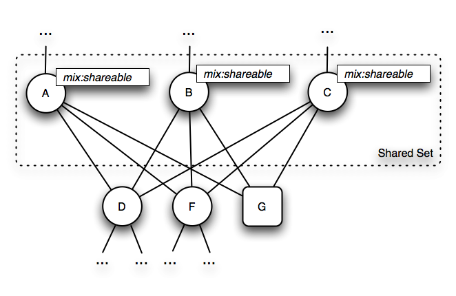
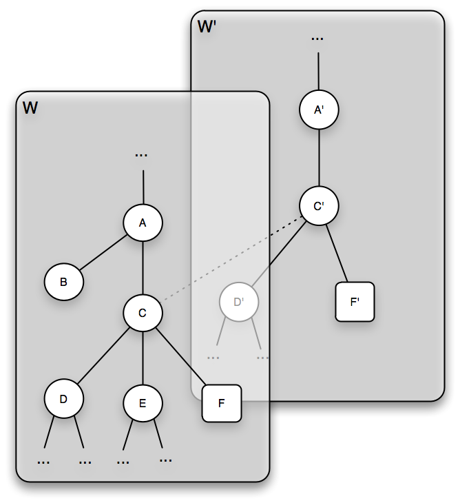
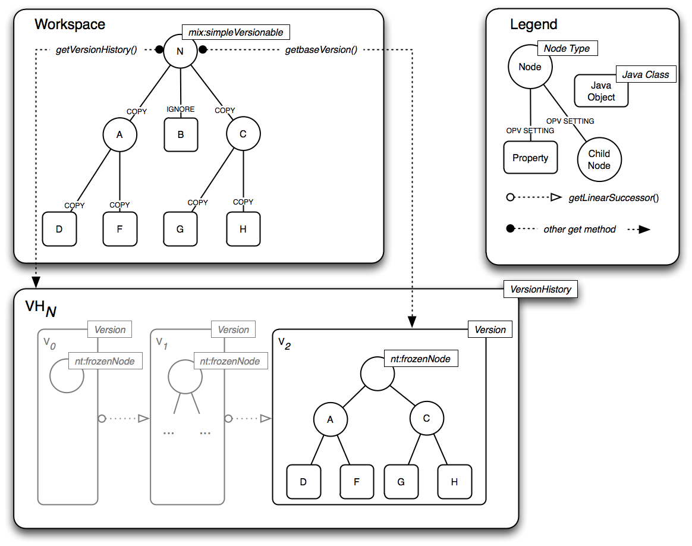

3 Repository Model
This section describes
the objects, types and structures that compose a JCR repository. The
description is language-neutral and focuses on the static aspects of
the data model. Discussion of the behavioral aspects of the
repository, and in particular the Java API for performing operations
on the model, is found in subsequent sections. The full repository
model is described here, though an implementation may support only a
subset of this model, in accordance with §24 Repository
Compliance.
3.1 Overview
3.1.1 Persistent Workspaces
A JCR repository
is composed of one or more persistent workspaces, each
consisting of a directed acyclic graph of items where the
edges represent the parent-child relation.
Each persistent
workspace is identified by a unique name within the repository,
which is a string.
3.1.2 Items
An item is either a
node or a property. A node can have zero or more child
items. A property cannot have child items but can hold zero or more
values.
The nodes of a
workspace form the structure of the stored data while the actual
content is stored in the values of the properties.
Each workspace
contains at least one item, the root node. The root node is
the only item in the workspace without a parent node; all other
items have at least one parent.
3.1.2.1 Shared Nodes
In the simplest case,
a workspace is a tree of items. However, strictly speaking,
the more general term graph should be used to cover those
cases where a repository supports the optional shareable nodes
feature, which allows an item to have more than one parent (see §3.9
Shareable Nodes Model).
3.1.3 Names
The name of the root
node of a workspace is always ““ (the empty string). Every other
item in a workspace has a name, which must be a JCR name (see
§3.2 Names).
3.1.3.1 Same-Name Siblings
In the simplest case,
every child item of a given parent has a unique name. However, child
nodes with identical names can only occur if a repository supports
same-name siblings (see §22 Same-Name Siblings).
Additionally, some repositories may support a node and sibling
property having the same name (see §5.1.8 Node and Property with
Same Name). However, two sibling properties can never have the
same name.
To distinguish sibling
nodes with the same name an integer index, starting at 1, is used.
A node with no same-name siblings has an implicit index of 1 and a
node name without an index is understood to have an index of 1.
3.1.4 Paths
The location of an
item in the workspace graph can be described by the path from the
root node to that item. The path consists of the name (and index in
cases of same-name siblings) of each interceding node in order from
root to target item, much like a file system path. Relative paths
can also be used to describe the location of one item with respect
to another (see §3.4 Paths).
3.1.5 Identifiers
In addition to a path,
every node also has an identifier. In some implementations, the
identifier may be independent of the path and provide an identity to
the node that is stable across moves within the workspace. In
simpler repositories the identifier may be implemented as a
reflection of the path and therefore not provide any additional
semantics (see §3.3 Identifiers).
3.1.6 Property Types
Properties can be
either single or multi-valued. Each value has one of the 12 possible
types (see §3.6 Properties). These types include familiar
data storage types such as strings, numbers, booleans, binaries and
dates, as well as types that hold pointers to other nodes in the
workspace.
3.1.6.1 Repository Diagram
T
he
above diagram depicts a repository R
with workspaces W0,
W1
and W2.
The item graph of W1
contains a root node with child nodes A,
B
and C.
A
has a property D
of type STRING
and a child node E,
which in turn has a property I
of type BINARY.
B
has the properties F
(a LONG)
and G
(a BOOLEAN).
C
has a property H
of type DOUBLE.
3.1.7 Node Types
Every node has a type.
A node’s type The names, types and other attributes of its child
items. Node types can be used to define complex storage objects
consisting of multiple subnodes and properties, possibly many layers
deep.
3.1.8 Sessions
A user connects
to a repository by passing a set of credentials and the name of the
workspace that the user wishes to access. The repository returns a
session which binds the user to the requested persistent
workspace with a level of authorization determined by that user's
credentials. A session is always bound to exactly one persistent
workspace, though a single persistent workspace may be bound to
multiple sessions.
3.1.8.1 User
A user is any agent
bound to a session. This may be a human user, an external software
process, or anything else that holds and controls the session.
3.1.8.2 Current Session and Workspace
Through a session, the
user can access, read and write the nodes and properties of the
bound workspace, to the extent allowed by that user's authorization
and the capabilities of the repository. Any object acquired,
directly, or indirectly through a chain of interceding objects, from
a particular session, is said to be within the scope of that session
and any method called on such object is also within the scope of the
same session.
In the context of
discussing a particular object or method call, the session within
whose scope that object or method call lies is referred to as the
current session, and the workspace to which that session is
bound is referred to as the current workspace.
3.2 Names
A JCR name is
an ordered pair of strings:
(N,
L)
where N is a
JCR namespace and L is a JCR local name.
3.2.1 Namespaces
A JCR namespace
is either the empty string or a Universal Resource Identifier.
Namespace ::=
EmptyString | Uri
EmptyString ::= /* The empty
string */
Uri ::= /* A URI, as defined in
Section 3 in
http://tools.ietf.org/html/rfc3986#section-3
*/
3.2.2 Local Names
A JCR local name
is a string that conforms to the grammar below.
LocalName ::= ValidString –
SelfOrParent
/* Any ValidString
except SelfOrParent */
SelfOrParent ::= '.' | '..'
ValidString ::= ValidChar
{ValidChar}
ValidChar ::= XmlChar –
InvalidChar
/* Any XmlChar
except InvalidChar */
InvalidChar
::= '/' | ':' | '[' | ']' | '|' | '*'
XmlChar ::=
/* Any character that matches the Char production
at http://www.w3.org/TR/xml/#NT-Char */
/* See §1.3.1 String Literals
in Syntactic Grammars for details
on the interpretation of
string literals in this grammar */
3.2.3 Use of JCR Names
JCR names are used to
name items, node types and other entities throughout the repository.
3.2.3.1 Item Names
Every item has one JCR name. If the
item has more than one parent it has the same name relative to each,
though in most cases an item will have only one parent (see §3.9
Shareable Nodes Model).
3.2.3.2 Paths
JCR names are combined
into JCR paths which indicate the location of an item within a
workspace either in relation to the root node or relative to another
item in the workspace (see §4.5 Workspace).
3.2.3.3 NAME and PATH Values
JCR names appear as
the values of NAME
properties (see §3.6.1.9 NAME) and within the values of PATH
properties (see §3.6.1.10 PATH).
3.2.3.4 Node Types
JCR names are used to name node types
(see §3.7 Node Types).
3.2.3.5 Constants
JCR names are used to identify other
types of entities such as privileges, access control
policies (see §16 Access Control Management), retention
policies, holds (see §20 Retention and Hold),
activities (see §15.12 Activities) and configurations
(see §15.13 Configurations and Baselines).
3.2.4 Naming Restrictions
This definition of JCR
name represents the least restrictive set of constraints
permitted for the naming of items and other entities. A repository
may further restrict the names of entities to a subset of JCR
names and in most cases is encouraged to do so.
In a read-only
repository, any such restrictions will stem trivially from the fact
that the repository controls the set of entity names exposed. A
writable repository may enforce any implementation-specific
constraint by causing an exception to be thrown on an invalid JCR
write method call.
The characters
declared invalid within a local name (“/”,
“:”,
“[“,
“]”,
“|”,
“*”)
represent only those characters which are used as metacharacters in
JCR names, paths and name-matching patterns (see §5.2.2 Iterating
Over Child Items). These restrictions are not necessarily
sufficient to enforce best practices in the creation of JCR names.
In particular, the minimal grammar defined here permits JCR names
with leading and trailing whitespace as well as characters which may
appear superficially identical while representing different code
points, creating a potential security issue.
Though this
specification does not attempt to define good naming practice,
implementers are discouraged from permitting names with these and
other problematic characteristics when possible. However, there may
be cases where the latitude provided by the minimal grammar is
useful, for example, when a JCR implementation is built on top of an
existing data store with an unconventional naming scheme.
3.2.5 Lexical Form of JCR Names
While a JCR name is an
ordered pair of strings, (N, L), it is not itself a
string. There are, however, two lexical forms (string
serializations) that a JCR name can take when used in the JCR API:
the expanded form and the qualified form. A JCR name
that is converted to either lexical form is said to have been
lexicalized.
3.2.5.1 Expanded Form
The expanded form of a
JCR name is defined as:
ExpandedName
::= '{' Namespace '}' LocalName
Namespace ::= /* see §3.2.1
Namespaces */
LocalName ::= /* see §3.2.2
Local Names */
/* See §1.3.1 String Literals
in Syntactic Grammars for details
on the interpretation of
string literals in this grammar */
3.2.5.2 Qualified Form
The qualified form of
a JCR name is defined as:
QualifiedName
::= [Prefix ':'] LocalName
Prefix ::= /*
Any string that matches the NCName production in
http://www.w3.org/TR/REC-xml-names
*/
LocalName ::= /* see §3.2.2
Local Names */
/* See §1.3.1 String Literals
in Syntactic Grammars for details
on the interpretation of
string literals in this grammar */
A qualified name is
only interpretable in the context of a namespace mapping,
which provides a one-to-one mapping between prefixes and namespaces.
When a qualified name Q is
passed to a JCR method within the scope of the Session
S then the JCR name J represented by Q is (N,
L) where N is the namespace corresponding to P
in the local namespace mapping of S. See §3.4
Namespace Mapping.
When a qualified name
occurs in a string serialization of repository content or a node
type definition, the namespace mapping is either provided within the
serialized form (see, for example, §7 Export and §25.2
Compact Node Type Definition Notation) or implied by the
context of use.
3.2.5.3 Qualified Form with the Empty Namespace
The qualified form of
a name (““, L) (i.e., with the empty string as namespace)
is not written as
:L
but simply as
L
The former is not a
valid qualified JCR name.
3.2.5.4 Exposing Non-JCR Names
An implementation that
exposes a non-JCR data store through the JCR API may wish to expose
names containing JCR-illegal characters by using a substitution or
escaping scheme. If so, it must do so by substituting private-use
Unicode characters for the JCR-illegal characters according to the
following mapping.
|
JCR-Illegal
character
|
Substitution
character
|
|
*
(U+002A)
|
U+F02A
|
|
/
(U+002F)
|
U+F02F
|
|
:
(U+003A)
|
U+F03A
|
|
[
(U+005B)
|
U+F05B
|
|
]
(U+005D)
|
U+F05D
|
|
|
(U+007C)
|
U+F07C
|
The mapping must
be used bi-directionally. When the repository wishes to return the
name of an entity whose native name contains a JCR-illegal
character, that character must be replaced with its corresponding
substitution character in the returned string.
Conversely, when a
name containing one of the substitution characters is passed to the
repository through the JCR API, that character must be replaced with
its corresponding non-JCR character before further processing is
done within the native layer, whether writing the name to storage or
using the name to access an entity.
In the unlikely event
that one of the substitution characters appears literally in a
native name, that character will be returned unchanged through the
JCR API.
In repositories that
do not expose non-JCR names and therefore do not need to use the
substitution scheme, any private-use substitution character passed
to the API is stored and returned unchanged. However, such use of a
private-use substitution character within a JCR name is strongly
discouraged.
3.2.6 Use of Qualified and Expanded Names
When a JCR name is
passed as an argument to a JCR method it may be in either expanded
or qualified form. When a repository returns a JCR name it must be
in qualified form. The qualified form of a name depends upon the
prevailing local namespace mapping of the current session (see §3.5
Namespace Mapping).
3.2.7 Equality of Names
Two JCR names (N1,
L1) and (N2, L2)
are equal if and only if N1 is equal
to N2 and L1 is
equal to L2, according to the definition of
string equality used in the String.compareTo
method. This definition applies both in the general context of using
an API method that takes or returns a JCR name and in the specific
case of comparing values of type NAME
(see §3.6.5.8 NAME).
3.3 Identifiers
Every node has an
identifier. An identifier is a string whose format is not
defined by this specification but which adheres to the following
constraints:
The identifier of a non-shared
node is unique within a workspace. The identifier of a shared node
is common to each member of that node's share-set (see §3.9
Shareable Nodes Model).
An identifier must be the
most stable one available to the implementation. For example, in
some implementations this might be nothing more than the node path
itself. Other implementations might support node identifiers that
are partly or entirely independent of the path.
3.3.1 Identifier Assignment
The identifier must be assigned at the
latest when the node is first persisted, though it may be assigned
earlier, when the node is first created in transient storage in the
session (see §10.4.1 Adding a Node).
3.3.2 Referenceable Identifiers
In implementations that support
referenceable nodes, these nodes have more stringent requirements on
their identifiers (see §3.8 Referenceable Nodes).
3.3.3 Correspondence by Identifier
Identifiers are also used for node
correspondence across multiple workspaces (see §3.10
Corresponding Nodes).
3.4 Paths
A JCR path P,
P
= (S0, S1, ...,
Sn),
is an ordered list
with at least one element, where each element Si,
for 0 i
n, is a path segment.
3.4.1 Path Segment
A path segment is one
of:
a name
segment, (J, I), where J is a JCR name
and
I is an integer index (I ≥ 1).
an identifier
segment, U, where U is a JCR identifier.
the root
segment.
the self
segment.
the parent
segment.
The root, self and
parent segments are logical constants distinct from each other and
from all name segments.
3.4.1.1 Position of Segments in a Path
Name, self and parent
segments can occur at any position in a path.
A root segment can
occur only as the first segment of a path.
An identifier segment
can occur only as the first and sole segment in a path. No other
segments may follow an identifier segment.
3.4.2 Path Resolution
The successive path
segments of JCR path P = (S0, S1,
..., Sn) define a route through workspace W
to a target item as follows:
If S0
is the root segment then the path is absolute and the current
item is the root node of W.
If S0
is an identifier segment U, then the path is absolute and
the current item is the node in W with the identifier
U.
Otherwise, the
path is relative and the current item is determined by the
context of use.
For each segment
S in path P:
If S is a
self segment then the current item does not change.
If S is a
parent segment then the new current item is a parent of the
old current item (see §3.4.2.1 Parent Resolution).
If S is a
name segment then the new current item is the child of the old
current item identified by S (see §3.4.2.2 Child
Resolution).
Once all segments
have been traversed, the current item is the target
item.
3.4.2.1 Parent Resolution
In most cases an item
will have only one parent, in such a case, parent resolution is
trivial. In repositories that support shareable nodes, a node may
share its child nodes and properties with other nodes. A child item
of a shared node therefore has more than one parent. In such a case
the parent resolved depends upon the deemed path of the item,
which is an implementation-specific issue (see §3.9.5 Deemed
Path). An attempt to resolve the parent of a workspace root node
always fails.
3.4.2.2 Child Resolution
Given a name segment S
= (J, I), J is the name of the child item
indicated by that segment while I indicates the index of the
item. The index is an integer greater than or equal to 1
and is used to distinguish between sibling child nodes with the same
name. If there is only one child node with the name J then
its index is always 1.
If there is more than one node with the name J then each has
a unique index (see §22 Same-Name Siblings).
The child item
indicated by S is determined as follows:
If the S
is not the last segment of the path then, if a child node
with name J and index I exists, S resolves to
that node. Otherwise, resolution fails.
If S is
the last segment of the path then,
if S is
constrained to resolve to a gettable node (as in the case of
Node.getNode)
and a child node with name J and index I is
retrievable, S resolves to that node. Otherwise,
if S is
constrained to resolve to an addable node (as in the case of
Node.addNode)
and a child node named J can be legally added and I
is equal to 1, then J is used as the name of the new node
which, if necessary, is given an appropriate index. Otherwise,
if S is
constrained to resolve to a gettable property (as in the
case of Node.getProperty)
then, if a property with name J is retrievable, and I
is equal to 1, S resolves to that property. Otherwise,
if S is
constrained to resolve to a settable property (as in the
case of Node.setProperty)
then, if a property with name J or if a property named J
can be legally added, and I is equal to 1, S resolves
to that property. Otherwise,
if S is
constrained to resolve to a gettable item (as in the case of
Session.getItem)
then if a node with name J and index I is
retrievable, S resolves to that node. Otherwise, if there
exists a property with name J and I is equal to 1, then S
resolves to that property.
Otherwise,
resolution fails.
3.4.3 Lexical Forms
Given a JCR path P
= (S0,
S1, ..., Sn), its lexical form L
can be constructed according to the following algorithm, where =
is the assignment operator, +=
is the string append operator, or
indicates an arbitrary choice between alternative operations and
nothing
is the null operation.
L = ""
for each S in P
if S is the root segment
L += "/"
else
if S is an identifier
segment U
L += "[" + U +
"]"
else if S is a self segment
L += "."
else if S is a parent
segment
L += ".."
else if S is a name segment
(J, I)
L += the qualified form of
J
or L += the expanded form
of J //optional syntax
if I > 1
L += "[" + I +
"]"
else
nothing
or L += "[1]"
//optional syntax
end if
end if
if S is not the last segment
of P
L += "/"
else
nothing
or L += "/"
//optional syntax
end if
end if
end for
The resulting L
is a lexical form of P.
As indicated by the steps marked optional syntax, a JCR path
may have multiple equivalent lexical forms depending on the use of
qualified vs. expanded names, the optional [1]
index indicator and the optional trailing forward slash (“/”).
3.4.3.1 Standard Form
A string constructed
without any of the optional syntax shown in the algorithm is called
the standard form of a JCR path. Such a lexical path has the
following characteristics:
It consists of
either one identifier segment or one or more name segments.
All name segments
are in qualified form, none are in expanded form.
No name segment
has a [1]
index.
There is no
trailing forward slash (“/”).
The following are
examples of standard form lexical paths:
3.4.3.2 Non-Standard Form
A string constructed
with one or more optional steps is a non-standard form
JCR path. A non-standard form lexical path has at least one
of the following features:
One or more name
segments are in expanded form.
One or more name
segments has a [1]
index.
The path has a
trailing forward slash (“/”).
The following are
examples of non-standard form lexical paths:
3.4.3.3 Lexical Path Grammar
A JCR path in lexical
form conforms to the following grammar
Path ::= AbsolutePath |
RelativePath
AbsolutePath
::= '/' [RelativePath] | '[' Identifier ']'
RelativePath
::= [RelativePath '/'] PathSegment ['/']
PathSegment
::= ExpandedName [Index] |
QualifiedName [Index]
|
SelfOrParent
Index ::= '['
Number ']'
Identifier ::= /* See §3.3
Identifiers */
Number ::= /* An integer > 0
*/
ExpandedName
::= /* See §3.2.5.1 Expanded Form */
QualifiedName
::= /* See §3.2.5.2 Qualified Form */
SelfOrParent
::= /* see §3.2.2 Local Names */
/* See §1.3.1 String Literals
in Syntactic Grammars for details
on the interpretation of
string literals in this grammar */
3.4.3.4 Parsing Lexical Paths
When parsing a lexical
path, the parser must distinguish between name segments that are in
expanded form and those that are in qualified form (see §3.2.5
Lexical Form of JCR Names). When making this determination,
the repository cannot assume that every namespace URI encountered in
an expanded name will be registered within the repository.
An otherwise valid
path containing an expanded name with an unregistered namespace
URI will always resolve into a valid internal representation of
a path (i.e., an ordered list of path segments, see §3.4 Paths).
Any errors that arise from passing such a path must therefore be as
a result of further processing (not merely parsing) that depends on
the semantics of the path and the context of use.
However, a path
containing a qualified name with an unregistered prefix will
not resolve into a valid internal path representation. An
attempt to pass such a path will therefore fail at the parsing
stage.
3.4.4 Absolute and Relative Paths
An abstract JCR path
is either absolute or relative.
3.4.4.1 Absolute Path
An absolute JCR path
is either root-based or identifier-based.
3.4.4.1.1 Root-Based Absolute Paths
A root-based absolute
path begins with the root segment. Its lexical form therefore begins
with a forward slash, for example,
/A/B/C
3.4.4.1.2 Identifier-Based Absolute Paths
An identifier-based
absolute path consists of a single identifier segment. Its lexical
form therefore consists of square brackets delimiting an identifier,
for example,
[f81d4fae-7dec-11d0-a765-00a0c91e6bf6]
3.4.4.2 Relative Path
A relative JCR path is
one which begins with a segment that is neither a root segment nor
an identifier segment. Its lexical form therefore begins with either
a JCR name, ..
or .,
for example,
D/E/F
or
../E/F/G
3.4.5 Normalized Paths
A JCR path is
normalized by the following steps:
All self segments
are removed.
All redundant
parent segments are collapsed. A redundant parent segment is one
which can be removed by also removing a preceding name segment
while preserving the location indicated by the path. For example,
the path /A/B/C/../..
can be collapsed to /A.
Note therefore, that if a normalized path contains any parent
segments, they must all precede the first name segment.
If the path is an
identifier-based absolute path, it is replaced by a root-based
absolute path that picks out the same node in the workspace as the
identifier it replaces.
3.4.6 Passing Paths
When a JCR path is
passed as an argument to a JCR method it may be normalized or
non-normalized and in standard or non-standard form.
3.4.7 Returning Paths
When a repository
returns a JCR path it must be normalized (see §3.4.5 Normalized
Paths), unless the repository is returning the value of a PATH
property, in which case the original, possibly non-normalized form
of the path is preserved and returned. In all cases the returned
path must be in standard form (see §3.4.3.1 Standard Form).
3.4.8 Equality of Paths
Two types of path
equality are defined: segment equality and semantic
equality.
3.4.8.1 Segment Equality
Two paths P1
and P2 are segment-equal if and only if:
Two name segments are
equal if and only if their JCR names are equal (see §3.2.7 Equality
of Names) and their integer indexes are equal.
Equality for
identifier segments is as defined for identifiers in general, that
is, by standard Java String
equality.
Equality for root,
self and parent segments is simple type identity; every instance of
a root, parent or self segment is equal to every other instance of
the same type.
3.4.8.2 Semantic Equality
For two paths P1
and P2 semantic equality is defined as
follows:
3.4.8.3 Application of Path Equality
When a JCR path is
passed to a JCR API method that must resolve that path the
applicable definition of path equality is that of semantic equality.
Semantic equality of two paths means that, given identical contexts,
the two paths will resolve to the same item.
However, values of
type PATH
are not normalized upon storage or retrieval, so the when comparing
two such values, the applicable definition of equality is that of
segment equality. (see §3.6.5.9 PATH).
3.5 Namespace Mapping
For compactness and
legibility in documentation, XML and Java code, JCR names are
usually expressed in qualified form.
The use of qualified
form, however, depends upon a context that supplies a mapping from
prefix to namespace. In documentation this context is provided
either by convention or explicit statement. In XML serialization it
is supplied by xmlns
attributes (see §7 Export) and in a running JCR repository
is provided by the local namespace mapping of each individual
Session.
3.5.1 Namespace Registry
The local namespace
mapping of a session is determined by the initial set of mappings
copied from the namespace registry and any session-local
changes made to that set.
The namespace registry
is a single, persistent, repository-wide table that contains the
default namespace mappings. It may contain namespaces that are not
used in repository content, and there may be repository content with
namespaces that are not included in the registry. The namespace
registry always contains at least the following built-in mappings
between prefix (on the left) and namespace (on the right):
jcr
= http://www.jcp.org/jcr/1.0
Reserved
for items defined within built-in node types (see §3.7 Node
Types).
nt
= http://www.jcp.org/jcr/nt/1.0
Reserved
for the names of built-in primary node types.
mix
= http://www.jcp.org/jcr/mix/1.0
Reserved
for the names of built-in mixin node types.
xml
= http://www.w3.org/XML/1998/namespace
Reserved
for reasons of compatibility with XML.
(the empty
string)
= (the empty string)
The
default namespace is the empty namespace.
3.5.1.1 Empty Prefix and Empty Namespace
The permanent default
namespace in JCR is the empty string, also referred to as the empty
namespace. This permanence is reflected in the immutable default
namespace mapping in the namespace registry. By definition, the
prefix in this mapping is the empty string, also referred to as the
empty prefix.
3.5.1.2 Additional Built-in Namespaces
A repository may
provide additional built-in mappings other than those defined in
this section. All mappings must be one-to-one, meaning that for a
given namespace in the registry exactly one prefix is mapped to it,
and for a given prefix in the registry exactly one namespace is
mapped to it.
3.5.2 Session-Local Mappings
A local set of
namespace mappings is associated with each session. When a new
session is acquired, the mappings present in the persistent
namespace registry are copied to the local namespace mappings of
that session. A user can then add new mappings or change existing
ones. The resulting mapping table applies only within the scope of
that session (see §5.11 Namespace Mapping).
If a JCR method
returns a name from the repository with a namespace URI for which no
local mapping exists, a prefix is created automatically and a
mapping between that prefix and the namespace URI in question is
added to the set of local mappings. The new prefix must differ from
those already present among the set of local mappings. If a JCR
method is passed a name or path containing a prefix which does not
exist in the local mapping an exception is thrown.
3.5.2.1 Effect of Session Namespace Mappings
All methods that take
or return names or paths must use the current session (see §3.1.8.2
Current Session and Workspace) namespace mappings to
dynamically interpret or produce those names or paths according to
the current local namespace mapping of the current session.
Though the precise
mechanism of this behavior is an implementation detail, its behavior
must be equivalent to that of a system where names and paths are
stored internally in expanded form and converted dynamically to and
from qualified JCR names or paths as necessary.
3.5.3 Namespace Conventions
Names and paths
determined by an application provider should be assigned namespace
URIs under the control of the provider organization. Because the
space of URIs is universally managed, this ensures that naming
collisions will not occur between applications from providers that
observe this convention.
3.6 Properties
All data stored within
a JCR repository is ultimately stored as the values of properties.
3.6.1 Property Types
Every property is of
one of the following types: STRING,
URI,
BOOLEAN,
LONG,
DOUBLE,
DECIMAL,
BINARY,
DATE,
NAME,
PATH,
WEAKREFERENCE
or REFERENCE.
3.6.1.1 STRING
STRING
properties store instances of java.lang.String.
3.6.1.2 URI
URI
properties store instances of java.lang.String
that conform to the syntax of a URI-reference as defined in RFC
3986.
3.6.1.3 BOOLEAN
BOOLEAN
properties store instances of the Java primitive type boolean.
3.6.1.4 LONG
LONG
properties store instances of the Java primitive type long.
3.6.1.5 DOUBLE
DOUBLE
properties store instances of the Java primitive type double.
3.6.1.6 DECIMAL
DECIMAL
properties store instances of java.math.BigDecimal.
3.6.1.7 BINARY
BINARY
properties store instances of javax.jcr.Binary
(see §5.10.5 Binary Object).
3.6.1.8 DATE
DATE
properties store instances of java.util.Calendar.
Note that an implementation may not support DATE
values that cannot be represented in the ISO 8601-based notation
defined in §3.6.4.3 From DATE To. In such cases an attempt
to set a property to such a value will throw a ValueFormatException.
3.6.1.9 NAME
NAME
properties store instances of JCR names.
3.6.1.10 PATH
3.6.1.11 WEAKREFERENCE
WEAKREFERENCE
properties serve as pointers to referenceable nodes by storing their
identifiers. WEAKREFERENCE
properties do not enforce referential integrity (see §3.8.2
Referential Integrity).
3.6.1.12 REFERENCE
REFERENCE
properties serve as pointers to referenceable nodes by storing their
identifiers. REFERENCE
properties do enforce referential integrity (see §3.8.2
Referential Integrity).
3.6.2 Undefined Type
The UNDEFINED
keyword, while not specifying an actual type, may be supported by
some repositories as a valid property type attribute value in
property definitions within node types. In that context it indicates
that the specified property may be of any type. No actual
existing property in the repository ever has the type UNDEFINED.
3.6.3 Single and Multi-Value Properties
A property may be a
single-value or a multi-value property.
A single-value
property, if it exists, must have a value. There is no such thing as
a null value. A multi-value property can have zero or more values.
Again there is no such thing as a null value, however a multi-value
property can be empty, just as an array can be empty.
The values stored
within a multi-valued property are all of the same type and are
ordered.
Whether a particular
property is a multi-valued property is governed by the property
definition applicable to it, which is determined by the node type of
the property's parent node (see §3.7 Node Types).
Accessing the value of
a property is done with Property.getValue
which returns a single Value
object. Accessing the set of values of a multi-value property is
done through Property.getValues
which returns a (possibly empty) array of Value
objects (see §5.10 Reading Properties).
3.6.4 Property Type Conversion
When the value of a
property is read or written using a type different from that
declared for the property, the repository attempts a type conversion
according to the following rules. Note that even in cases where the
JCR type conversion is defined in terms of standard JDK type
conversion method, failure of conversion must only ever cause a JCR
ValueFormatException
to be thrown and never any exception defined in the JDK API.
3.6.4.1 From STRING To
BINARY: The
string is encoded using UTF-8.
DATE: If the
string is in the format described in §3.6.4.3 From DATE To,
it is converted directly, otherwise a ValueFormatException
is thrown.
DOUBLE: The
string is converted using java.lang.Double.valueOf(String).
DECIMAL: The
string is converted using the constructor
java.math.BigDecimal(String).
LONG: The
string is converted using java.lang.Long.valueOf(String).
BOOLEAN: The
string is converted using java.lang.Boolean.valueOf(String).
NAME: If the
string is a syntactically valid qualified JCR name with a registered
prefix, it is converted directly. If it is a syntactically valid
expanded JCR name with a registered namespace URI, it is returned in
qualified form. If it is a syntactically valid expanded JCR name
with an unregistered namespace URI, a prefix is created
automatically, the mapping added to the local namespace mappings
(see §3.5.2 Session-Local Mappings), and the name is
returned in qualified form. Otherwise a ValueFormatException
is thrown.
PATH: If the
string is a valid JCR path then each name segment is converted as
per NAME
conversion above, and all other segments are converted directly. If
one or more name conversions fails or if the string is not a valid
path then a ValueFormatException
is thrown. The presence of an item in the current workspace at that
path is not required.
URI: If the
string is a syntactically valid URI-reference, it is converted
directly, otherwise a ValueFormatException
is thrown. The string is parsed as described in RFC 3986. In
particular, the first colon (“:”)
encountered is interpreted as the scheme delimiter and the string as
a whole is assumed to already be in percent-encoded form. This means
that if a non-URI-legal character is encountered it is not
percent-encoded, but is instead regarded as an error and a
ValueFormatException
is thrown.
REFERENCE or
WEAKREFERENCE: If the string is a syntactically valid
identifier, according to the implementation, it is converted
directly, otherwise a ValueFormatException
is thrown. The identifier is not required to be that of an existing
node in the current workspace.
3.6.4.2 From BINARY To
STRING: An
attempt is made to interpret the stream as a UTF-8 encoded string.
If the string is not a legal UTF-8 byte sequence then the behavior
is implementation-specific.
All Others: The
binary stream is first converted to a string, as described above. If
this is successful, the resulting string is converted according to
the appropriate conversion as described in §3.6.4.1 From STRING
To.
3.6.4.3 From DATE To
STRING: The
date is converted to the following format:
sYYYY-MM-DDThh:mm:ss.sssTZD
where:
sYYYY
Four-digit
year with optional leading positive (‘+’)
or negative (‘-’)
sign. 0000
, -0000
and +0000
all indicate the year 1 BCE. –YYYY
where YYYY
is the number y indicates the year (y+1) BCE. The
absence of a sign or the presence of a positive sign indicates a
year CE. For example, -0054
would indicate the year 55 BCE, while +1969
and 1969
indicate the year 1969 CE.
MM
Two-digit
month (01 = January, etc.)
DD
Two-digit
day of month (01 through 31)
hh
Two
digits of hour (00 through 23, or 24 if mm
is 00 and ss.sss
is 00.000)
mm
Two
digits of minute (00 through 59)
ss.sss
Seconds,
to three decimal places (00.000 through 59.999 or 60.999 in the case
of leap seconds)
TZD
Time
zone designator (either Z for Zulu, i.e. UTC, or +hh:mm
or -hh:mm, i.e. an offset from UTC)
Note that the “T”
separating the date from the time and the separators “-”and
“:”
appear literally in the string.
This format is a
subset of the format defined by ISO 8601:2004.
If the DATE
value cannot be represented in this format a ValueFormatException
is thrown.
BINARY: The
date is converted to a string, as described in §3.6.4.2 From
BINARY To, and this string is encoded in UTF-8.
DOUBLE: The
date is converted to the number of milliseconds since 00:00 (UTC) 1
January 1970 (1970-01-01T00:00:00.000Z).
If this number is out-of-range for a double, a ValueFormatException
is thrown.
DECIMAL: The
date is converted to the number of milliseconds since 00:00 (UTC) 1
January 1970 (1970-01-01T00:00:00.000Z).
LONG: The date
is converted to the number of milliseconds since 00:00 (UTC) 1
January 1970 (1970-01-01T00:00:00.000Z).
If this number is out-of-range for a long, a ValueFormatException
is thrown.
All Others: A
ValueFormatException
is thrown.
Since the string and
number formats into which a DATE
may be converted can hold only a subset of the information
potentially contained within a java.util.Calendar,
conversion from DATE
to STRING,
BINARY, DOUBLE, DECIMAL or LONG
may result in loss of information.
3.6.4.4 From DOUBLE To
STRING: The
double is converted using java.lang.Double.toString().
BINARY: The
double is converted to a string, as described in §3.6.4.2 From
BINARY To, and this string is encoded in UTF-8.
DECIMAL: The
double is converted using the constructor
java.math.BigDecimal(double).
DATE: The
double is coerced to a long using standard Java type coercion and
interpreted as the number of milliseconds since 00:00 (UTC) 1
January 1970 (1970-01-01T00:00:00.000Z).
If the resulting value is out of range for a date, a
ValueFormatException
is thrown.
LONG: Standard
Java type coercion is used.
All Others: A
ValueFormatException
is thrown.
3.6.4.5 From DECIMAL To
STRING: The
decimal is converted using java.math.BigDecimal.toString().
BINARY: The
decimal is converted to a string, as described in §3.6.4.2 From
BINARY To, and this string is encoded in UTF-8.
DOUBLE: The
decimal is converted using java.math.BigDecimal.doubleValue().
DATE: The
decimal is converted to a long and interpreted as the number of
milliseconds since 00:00 (UTC) 1 January 1970
(1970-01-01T00:00:00.000Z).
If the resulting value is out of range for a date, a
ValueFormatException
is thrown.
LONG: The
decimal is converted using java.math.BigDecimal.longValue().
All Others: A
ValueFormatException
is thrown.
3.6.4.6 From LONG To
STRING: The
long is converted using java.lang.Long.toString().
BINARY: The
long is converted to a string, as described in §3.6.4.2 From
BINARY To, and this string is encoded in UTF-8.
DECIMAL: The
double is converted using the method
java.math.BigDecimal.valueOf(long).
DATE: The long
is interpreted as the number of milliseconds since 00:00 (UTC) 1
January 1970 (1970-01-01T00:00:00.000Z).
If the resulting value is out of range for a date, a
ValueFormatException
is thrown.
DOUBLE:
Standard Java type coercion is used.
All Others: A
ValueFormatException
is thrown.
3.6.4.7 From BOOLEAN To
STRING: The
boolean is converted using java.lang.Boolean.toString().
BINARY: The
boolean is converted to a string, as described in §3.6.4.2 From
BINARY To, and this string is encoded in UTF-8.
All Others: A
ValueFormatException
is thrown.
3.6.4.8 From NAME To
STRING: The
name is converted to qualified form according to the current local
namespace mapping (see §3.2.5.2 Qualified Form).
BINARY: The
name is converted to a string, as described in §3.6.4.2 From
BINARY To, and then encoded using UTF-8.
PATH: The name
becomes a relative path of length one.
URI: The name
becomes a URI-reference consisting of “./”
followed by the name in qualified form. For example, the name
foo:bar
becomes the URI-reference ./foo:bar.
The addition of the leading “./”
is done to ensure that a colon-delimited prefix is not interpreted
as a URI scheme name. If the name includes characters that are
illegal within a URI-reference (such as any non-ASCII character),
the UTF-8 byte representations of these characters are
percent-encoded, as described in RFC 3986.
All Others: A
ValueFormatException
is thrown.
3.6.4.9 From PATH To
STRING: Each
path is converted to standard form according to the current local
namespace mapping (see §3.4.3.1 Standard Form).
BINARY: The
path is converted to a string, as described in §3.6.4.2 From
BINARY To, and then encoded using UTF-8.
NAME: If the
path is a relative path of length one it is converted directly,
otherwise a ValueFormatException
is thrown.
URI: If the
path is root-based absolute (that is, it has a leading “/”,
see §3.4.4.1.1 Root-Based Absolute Paths), it is directly
converted into a URI-reference. If the path is identifier-based
absolute (§3.4.4.1.2 Identifier-Based Absolute Paths) or
relative, it becomes a URI-reference consisting of “./”
followed by the path in standard form. For example, the path
foo:bar/foo:baz
becomes the URI-reference ./foo:bar/foo:baz.
The addition of the leading “./”
is done to ensure that a colon-delimited prefix is not interpreted
as a URI scheme name. If the path includes characters that are
illegal within a URI-reference (such as any non-ASCII character),
the UTF-8 byte representations of these characters are
percent-encoded, as described in RFC 39866.
All Others: A
ValueFormatException
is thrown.
3.6.4.10 From URI To
STRING: The URI
is converted directly into a STRING.
BINARY: Since a
URI is guaranteed to already contain only ASCII characters it is
converted directly to a BINARY
resulting in series of octets that is a UTF-8 encoding of the
character sequence comprising the URI.
NAME: If the
URI
consists of a single path segment without a colon (for example,
simply bar)
it is converted to a NAME
by decoding any percent-escaped sequences into octet sequences and
then decoding those into character sequences using UTF-8. If it has
a redundant leading “./”
followed by a single segment (with or without a colon, like ./bar
or ./foo:bar
) the redundant “./”
is removed and the remainder is converted to a NAME
in the same way. Otherwise a
ValueFormatException
is thrown.
PATH: If the
URI
begins with a “/”
it is converted a PATH
by decoding any percent-escaped
sequences into octet sequences and then decoding those into
character sequences using UTF-8. If it consists of a path whose
first segment is without a colon (for example, bar,
bar/baz
or bar/foo:baz)
it is converted in the same way. If it consists of a path with a
redundant leading “./”
(for example ./bar/baz,
or ./foo:bar/foo:baz
) the redundant “./”
is removed and the remainder is converted to a PATH
as described in §3.6.4.1 From STRING To. Otherwise a
ValueFormatException
is thrown.
All Others: A
ValueFormatException
is thrown.
3.6.4.11 From REFERENCE To
STRING: The
identifier is converted directly to a string.
BINARY: The
identifier is converted directly to a string and then converted to
BINARY
as described in §3.6.4.1 From STRING To.
WEAKREFERENCE:
The REFERENCE
is simply turned into a WEAKREFERENCE.
All Others: A
ValueFormatException
is thrown.
3.6.4.12 From WEAKREFERENCE To
STRING: The
identifier is converted directly to a string.
BINARY: The
identifier is converted directly to a string and then converted to
BINARY
as described in §3.6.4.1 From STRING To.
REFERENCE: The
WEAKREFERENCE
is simply turned into a REFERENCE.
All Others: A
ValueFormatException
is thrown.
3.6.5 Comparison of Values
For any values V1
and V2 both of the same property type, the
relations is equal to, is ordered before and is
ordered after are defined in §3.6.5.1 CompareTo Semantics.
Note that the
definition of these relations here does not necessarily imply that
JCR API methods for testing these relations are supported for every
property type. In particular, Value.equals
is not required to work on BINARY
values and JCR query is not required to support testing the
equality or ordering of BINARY
values.
3.6.5.1 CompareTo Semantics
For the property types
other than BOOLEAN,
NAME,
PATH
and BINARY,
comparison relations are defined in terms of the result of the
compareTo
method on instances V1
and V2
of the Java class corresponding to the JCR property type (see each
section below for the relevant class). For those types:
V1
is equal to V2 if and only if
V1.compareTo(V2)
== 0.
V1
is ordered before V2 if and
only if V1.compareTo(V2)
< 0.
V1
is ordered after V2 if and only if
V1.compareTo(V2)
> 0.
3.6.5.2 STRING, URI, REFERENCE and WEAKREFERENCE
If V1
and V2 are values of type STRING,
URI,
REFERENCE
or WEAKREFERENCE
then the repository should use the semantics of
java.lang.String.compareTo,
as described in §3.6.5.1 CompareTo Semantics.
3.6.5.3 DATE
If V1
and V2 are values of type DATE
then the repository must use the semantics of
java.lang.Calendar.compareTo,
as described in §3.6.5.1 CompareTo Semantics.
3.6.5.4 DOUBLE
If V1
and V2 are values of type DOUBLE
then the repository must use the semantics of
java.lang.Double.compareTo,
as described in §3.6.5.1 CompareTo Semantics.
3.6.5.5 LONG
If V1
and V2 are values of type LONG
then the repository must use the semantics of
java.lang.Long.compareTo,
as described in §3.6.5.1 CompareTo Semantics.
3.6.5.6 DECIMAL
If V1
and V2 are values of type DECIMAL
then the repository must use the semantics of
java.lang.BigDecimal.compareTo,
as described in §3.6.5.1 CompareTo Semantics.
3.6.5.7 BOOLEAN
If V1
and V2 are values of type BOOLEAN
then
V1
is equal to V2 if and only if V1
== V2.
V1
is ordered before V2 if and
only if V1
== false and
V2 == true.
V1
is ordered after V2 if and only if
V1
== true and V2
== false.
3.6.5.8 NAME
If V1
and V2 are values of type NAME
and V1 = (N1, L1)
and V2 = (N2, L2)
where N1 and N2
are JCR namespaces and L1 and L2
are JCR local names then
3.6.5.9 PATH
If V1
and V2 are values of type PATH
then
V1
is equal to V2 if and only if V1
and V2 are segment-equal (see
§3.3.8 Equality of Paths).
Ordering is
implementation-specific. The only requirement is that a total
order on values of type PATH
must be defined, meaning that if V1 and V2
are not equal then either V1 is ordered
before V2 or V1
is ordered after V2.
3.6.5.10 BINARY
If V1
and V2 are values of type BINARY
and given,
3.6.6 Value.equals Method
An implementation of
the Value
interface must override the inherited method Object.equals(Object)
so that, given Value
instances V1
and V2,
V1.equals(V2)
will return true
if:
V1
and V2
were acquired from the same Session,
and
the contents of V1
and V2
have not yet been accessed, and
V1
and V2
are of the same type, and
V1
is equal to V2
as defined in §3.6.5 Comparison of Values.
V1.equals(V2)
will return false
otherwise.
In addition:
3.6.7 Length of a Value
The length of a
value is defined as follows:
For a BINARY
value, its length is equal to its length in bytes. This number is
returned both by Binary.getSize
(see §5.10.5 Binary Object) and by Property.getLength
and Property.getLengths
(see §5.10.3 Value Length).
For other types,
the length is the same value that would be returned by calling
java.lang.String.length()
on the String
resulting from standard JCR property type conversion (see §3.6.4
Property Type Conversion). This number is returned by
Property.getLength
and Property.getLengths.
For single value
properties, the length of a property's value is often referred to as
the property length.
3.7 Node Types
Node types are used to
enforce structural restrictions on the nodes and properties in a
workspace by defining for each node, its required and permitted
child nodes and properties.
Every node has one
declared primary node type and zero or more mixin node
types. Primary node types are typically used to defined the core
characteristics of a node, while mixin node types are used to add
additional characteristics often related to specific repository
functions or to metadata.
In a writable
repository a node's primary type is first assigned upon node
creation, while mixin types may be assigned on creation or during a
node's lifetime. Repository implementations may vary as to how
flexible they are in allowing changes to the primary or mixin node
types assigned to a node.
Each repository has a
single, system-wide registry of node types. Typically, a repository
will come with some implementation-determined set of built-in node
types. Some of these types may be vendor-specific while others may
be standard node types defined by JCR to support common use-cases
(see §3.7.11 Standard Application Node Types) or repository
features. Some repositories may further allow users to register new
node types programmatically (see §19 Node Type Management).
3.7.1 Node Type Definition Attributes
A node type definition
consists of the following attributes:
3.7.1.1 Node Type Name
Every registered node
type has a JCR name, unique within the repository.
3.7.1.2 Supertypes
A node type has zero
or more supertypes. Supertypes are specified by name.
3.7.1.3 Abstract
A node type may be
declared abstract, meaning that it cannot be directly
assigned to a node, though it may act as a supertype to other node
types. The abstract flag is a boolean.
3.7.1.4 Mixin
A node type may be
declared a mixin node type. A mixin node type can be assigned to a
node during that node's lifetime, not just upon node creation, as is
the case with primary node types. The mixin flag is a boolean.
3.7.1.5 Queryable Node Type
A node type may be
declared queryable, meaning that the node type can be used in
a query selector and that the query-related attributes of properties
defined in that node type take effect. The queryable node type
attribute is a boolean.
3.7.1.5.1 Interaction with Property Definitions
If a node type is
declared queryable, then the available query operators,
full-text searchable and query-orderable
attributes of its property definitions take effect (see §3.7.3.3
Available Query Operators, §3.7.3.4 Full-Text Searchable,
§3.7.3.5 Query-Orderable). If a node type is declared
non-queryable then these attributes of its property definitions have
no effect.
3.7.1.6 Orderable Child Nodes
A node type may
declare its child nodes orderable, meaning that for all nodes of
that type, the order that the child nodes are iterated over can be
programmatically controlled by the user (see §23 Orderable Child
Nodes). The orderable child nodes flag is a boolean.
3.7.1.7 Primary Item
A node type can
declare one of its child items as primary, meaning that for all
nodes of that type, that child item is accessible through a
dedicated API method which does not require the name of the item.
(see §5.1.7 Primary Item Access). This feature can help
generic API clients intelligently traverse an unknown node
structure. The primary item may be an item name, which must be a JCR
name, or null, meaning that there is no primary item.
3.7.1.7.1 Primary Item and Same-Name Siblings
In cases where the
primary child item specifies the name of a set of same-name sibling
child nodes, the node with index [1]
will be regarded as the primary item.
3.7.1.7.2 Property and Child Node With Same Name
In cases where this
node has both a child node and a property with the same name and
where that name is specified as the primary item name, the child
node will be regarded as the primary item (see §22.4 Property
and Node with Same Name).
3.7.1.8 Property Definitions
A node type may
contain a list of property definitions, which specify the
properties that nodes of that type are permitted or required to have
and the characteristics of those properties. The list of property
definitions may be empty.
3.7.1.9 Child Node Definitions
A node type may
contain a list of child node definitions, which specify the
permitted or required child nodes and their characteristics. The
list of child node definitions may be empty.
3.7.2 Item Definition Attributes
Property
and child node definitions have some attributes in common, while
others are specific to either property definitions or child nodes in
particular (this is reflected in the API interfaces, see §8.3
ItemDefinition Object).
The common attributes are:
3.7.2.1 Item Definition Name
The name attribute
specifies the set of child nodes or properties to which the
definition applies. This set is called the scope of the
definition. An item within the scope of a given definition is called
a scoped item (scoped property, scoped child node) of that
definition. The definition within whose scope a given item falls is
called the scoping definition of that item.
In the standard case
the scope consists of the single item named by the attribute and
must be a JCR name.
3.7.2.1.1 Item Definition Name and Same-Name-Siblings
In a repository that
supports same-name siblings (see §22 Same-Name Siblings),
the name attribute of a child node definition will have scope over
all the child nodes of that name. In this case the attribute must
also be a JCR name.
3.7.2.1.2 Item Definition Name and Residual Definitions
In a repository that
supports residual definitions the name attribute may be “*”
(asterisk), specifying that the
definition is residual, meaning that its scope consists of all other
properties (child nodes), which are not otherwise scoped by any of
the other property (child node) definitions in the effective node
type of the node (see §3.7.6.5 Effective Node Type).
3.7.2.1.3 Multiple Item Definitions with the Same Name
A
node type may have two or more item definitions with identical name
attributes. On Node.setProperty
or Node.addNode,
the repository must choose among the available definitions for one
which matches the name and possible type information specified in
the method call. If this information is insufficient to select a
single definition unambiguously, the repository may choose a
definition based on some implementation-specific criteria or fail
the operation (see §10.4 Adding Nodes and Setting Properties).
3.7.2.2 Protected
If an item I is
declared protected it is repository-controlled.
If I is a node
then, through the core write methods of JCR (see §10.2 Core
Write Methods),
I cannot
be removed,
child nodes of I
cannot be added, removed, or reordered,
properties of I
cannot be added or removed,
the values of
existing properties of I cannot be changed,
the primary node
type of I cannot be changed and
mixin node types
cannot be added to or removed from I.
If I is a property
then, through the core write methods of JCR (see §10.2 Core
Write Methods),
Additionally, if I
is a property, its being repository-controlled also implies that its
value is under the control of the repository and can change at any
time, before or after save. See §3.7.2.3.2 Auto-Created and
Protected.
3.7.2.3 Auto-Created
An
item may be declared auto-created,
meaning that it is automatically created upon creation of its parent
node. The auto-created attribute is a boolean.
3.7.2.3.1 Auto-Created and Non-Protected
If an item is
auto-created but not protected then it must be immediately
created in transient space when its parent node is created. Creation
of auto-created non-protected items must never be delayed until save
(see §10.11 Saving).
3.7.2.3.2 Auto-Created and Protected
If an item is both
auto-created and protected, then it should be immediately
created in transient space when its parent node is created. Creation
of auto-created protected items should not be delayed until save,
though doing so does not violate JCR compliance. In some
implementations the value of an auto-created property may be
assigned upon save, in such cases the creation of the property may
also be delayed until save (see, for example, §3.7.1 Identifier
Assignment).
3.7.2.3.3 Auto-created and Same-Name Siblings
In a repository that
supports same-name siblings (see §22 Same-Name Siblings), a
child node definition may specify that a node be both auto-created
and allow same-name siblings. In that case the repository must
create at least one such child node with the specified name upon
parent node creation, though it may create more than one.
3.7.2.3.4 Auto-created and Residual Definitions
In repositories that
support residual definitions, an item cannot be both auto-created
and residual (see §3.7.2.1.2 Item Definition Name and Residual
Definitions).
3.7.2.3.5 Chained Auto-creation
An auto-created node
may itself have auto-created child items, resulting in the automatic
creation of a tree of items. However, chaining that produces an
infinite loop of item creation is not permitted. A repository must
ensure that at no time does it have a set of registered node types
that could result in such behavior (see §19 Node Type
Management).
3.7.2.4 Mandatory
An
item may be declared mandatory,
meaning that the item must exist before its parent node is saved.
3.7.2.4.1 Mandatory and Multi-Value Properties
Since single-value
properties either have a value or do not exist (there being no
concept of the null value, see §10.4.2.4 No Null Values), a
mandatory single-value property must have a value. A mandatory
multi-value property, on the other hand, may have zero or more
values.
3.7.2.4.2 Mandatory and Same-Name Siblings
In a repository that
supports same-name siblings, a child node definition may specify
that a node be both mandatory and allow same-name siblings. In that
case at least one child node must exist upon save of the parent node
(see §22 Same-Name Siblings).
3.7.2.4.3 Mandatory and Residual Definitions
In repositories that
support residual definitions, an item cannot be both mandatory and
residual (see §3.7.2.1.2 Item Definition Name and Residual
Definitions).
3.7.2.5 On-Parent-Version
In a repository that
supports simple or full versioning the
on-parent-version attribute governs the behavior of the child item
when its parent node is checked-in (see §15.2 Check-In: Creating
a Version). In repositories that do not
support simple or full
versioning this attribute has no effect.
3.7.3 Property Definition Attributes
A
property definition has all the attributes of a generic item
definition as well as the following property-specific attributes:
3.7.3.1 Property Type
A property definition
must specify a property type. This must be one of the JCR property
types (see §3.6.1 Property Types) or, in repositories that
support it, the UNDEFINED
keyword, indicating that the property scoped by this definition can
be of any type (see §3.6.2 Undefined Type). An attempt to
save a property with a type different from that required by its
definition will fail if conversion to that type is not possible (see
§10.4.2 Setting a Property and §3.6.4 Property Type
Conversion).
3.7.3.2 Default Values
The
default values
attribute of a property definition defines the values
assigned to property if it is auto-created. If the property
is single-valued this attribute will hold a single value. If it is
multi-valued this attribute will hold an array of values. A default
values setting of null
indicates that the property does not have a single static default
value. It may have no default value at all or it may have a
parameterized default value defined externally to this
specification. If the scoped property is not auto-created
then this attribute has no effect.
3.7.3.3 Available Query Operators
A property definition
declares the set of query comparison operators that can be validly
applied to a property. The set of operators that can appear in this
attribute may be limited by implementation-specific constraints that
differ across property types. For example, some implementations may
permit property definitions to provide EqualTo
and NotEqualTo
(see §6.7.16 Comparison) as available operators for BINARY
properties while others may not. However, in all cases where a
JCR-defined operator is potentially available for a given
property type, its behavior must conform to the comparison semantics
defined in §3.6.5 Comparison of Values.
3.7.3.3.1 Interaction with Node Type Definition
This attribute only
takes effect if the node type holding the property definition has a
queryable setting of true (see §3.7.1.5 Queryable Node
Type).
3.7.3.4 Full-Text Searchable
A property may be
declared full-text searchable, meaning that its value is
accessible through the full-text search function within a query (see
§6.7.19 FullTextSearch). The full-text searchable flag is a
boolean.
3.7.3.4.1 Interaction with Node Type Definition
This attribute only
takes effect if the node type holding the property definition has a
queryable setting of true (see §3.7.1.5 Queryable Node
Type), otherwise this attribute is automatically set to false.
3.7.3.5 Query-Orderable
A property may be
declared query-orderable, meaning that query results may be
ordered by this property using the order clause of a query
(see §6.7.37 Ordering). The query-orderable flag is a
boolean.
3.7.3.5.1 Interaction with Node Type Definition
This attribute only
takes effect if the node type holding the property definition has a
queryable setting of true (see §3.7.1.5 Queryable Node
Type), otherwise this attribute is automatically set to false.
3.7.3.6 Value Constraints
A property definition
may impose constraints on the value that the property may hold.
These value constraints are defined by an array of strings, whose
format differs depending on the type of the property.
Each string in the
returned array specifies a constraint on the values of the property.
In order to be valid, each value of the property (since a
property may be multi-valued) must independently meet at least
one of the constraints.
If a property does not
exist or, in the case of multi-value properties, contains an empty
array, the constraint set is considered to have been met.
An attempt to save a
property whose value or values fail to meet the constraint criteria
will fail (see §10.11 Saving).
Reporting constraint
information is optional on a per property instance level. The return
of an empty array indicates that there are no expressible
constraints, meaning that either there are constraints but they are
not expressible in the constraint-string syntax, or constraint
discovery is not supported for that property.
Constraint strings
have different formats depending on the type of the property in
question. The following sections describe the value constraint
syntax for each property type.
3.7.3.6.1 STRING and URI Constraints
For STRING
and URI
properties, the constraint string is a regular expression pattern
according to the syntax of java.util.regex.Pattern.
3.7.3.6.2 PATH Constraints
For PATH
properties, the constraint is an absolute or relative path, possibly
terminating with a “*”
as the last segment.
On assignment the
constraint may be passed in any valid lexical form, with the
possible addition of a trailing “*”.
The constraint, however is stored as a JCR path in normalized form
plus an optional match-descendants indicator corresponding to
the “*”.
The constraint is returned in normalized standard form (see §3.4.5.1
Standard Form and §3.4.5 Normalized Paths).
For a constraint
without match-descendants, the constraint is met when the
property value is equal to the constraint. For a constraint with
match-descendants, the constraint is met when the property value is
either equal to the constraint or equal to a descendant path of the
constraint (see §3.4.8 Equality of Paths).
3.7.3.6.3 NAME Constraints
For NAME
properties, the constraint is a JCR name. On assignment the
constraint may be passed in any valid lexical form but is returned
in qualified form (see §3.2.5.2 Qualified Form).The
constraint is met if the property value is equal to the constraint
(see §3.2.7 Equality of Names).
3.7.3.6.4 REFERENCE and WEAKREFERENCE Constraints
For REFERENCE
and WEAKREFERENCE
properties, the constraint is a JCR name. The constraint is met if
the target node of the property is of the node type indicated by the
constraint (see §3.7.6.3 Is-of-Type Relation). On assignment
the constraint passed may be in any valid lexical form but is
returned in qualified form (see §3.2.5.2 Qualified Form).
3.7.3.6.5 BINARY, DATE, LONG, DOUBLE and DECIMAL
Constraints
The remaining types
all have value constraints in the form of inclusive or exclusive
ranges specified according to the following pattern:
Constraint ::= Open Min ',' Max
Close
Open ::= '[' | '('
Close ::= ']' | ')'
Min ::= /* Type dependent, see
below */
Max ::= /* Type dependent, see
below */
/* See §1.3.1 String Literals
in Syntactic Grammars for details
on the interpretation of
string literals in this grammar */
The brackets “[“
and “]”
indicate inclusivity, while “(“
and “)”
indicate exclusivity. A missing min
or max
value indicates no bound in that direction. The meaning of the min
and max
values themselves differ between types as follows:
BINARY:
min
and max
specify the allowed size range of the binary value in bytes.
DATE:
min
and max
are dates specifying the allowed date range. The date strings must
be in the standard string serialization (see §3.6.4.3 From
DATE To).
LONG,
DOUBLE, DECIMAL : min,
max
are valid Java language numeric literals.
The
range is evaluated according to the standard value comparison rules
(see §3.6.5 Comparison of Values).
To specify a constant
value, the constant itself, “c”
may be used instead of the bracket notation, though the constraint
is always returned in bracket notation.
3.7.3.6.6 BOOLEAN
For BOOLEAN
properties the constraint string can be either “true”
or “false”.
In most cases getValueConstraints
will return an empty array since placing a constraint on a BOOLEAN
value is uncommon.
3.7.3.6.7 Choice Lists
Because constraints
are returned as an array of disjunctive constraints, in many cases
the elements of the array can serve directly as a choice list.
This may, for example, be used by an application to display options
to the end user indicating the set of permitted values.
3.7.3.7 Multi-Value
A property can be
declared multi-valued. An attempt to set a single-value
property by passing an array will fail. Similarly, an attempt to set
a multi-value property by passing a non-array will also fail (see
§10.4.2 Setting a Property).
3.7.4 Child Node Definition Attributes
A child
node definition has all the attributes of a generic item definition
as well as the following node-specific attributes:
3.7.4.1 Required Primary Node Types
A child node
definition must declare one or more required primary node types.
In order to
successfully save a scoped child node N, it must be true for
each required primary type R that the assigned primary type A
of N is of type R (see §3.7.6.3 Is-of-Type
Relation).
In cases where this
attribute specifies more than one required node type, any particular
node instance will still have only one assigned primary type, but
that type must be a subtype of all of the types specified by
this attribute. Such a situation may arise, for example, in
repositories that support multiple inheritance of node types.
3.7.4.2 Default Primary Node Type
The default primary
type of a child node definition is a JCR name defining the node
type that the child node will be given if it is auto-created or
created without an explicitly specified node type. This node type
must be the same as or a subclass of each of the required primary
node types.
If null
is returned this indicates that no default primary type is specified
and that therefore an attempt to create this node without specifying
a node type will fail.
3.7.4.3 Same-Name Siblings
The
same-name sibling
attribute of a child node definition indicates whether the child
node can have sibling nodes with the same name (see §22 Same-Name
Siblings). In repositories that do not
support same-name siblings this attribute has no effect.
3.7.5 Mixin Node Types
Mixin node types are
used to add additional properties or child nodes to a given node
instance, typically in order to expose some aspect of a specialized
repository feature. For example, referenceability is supported by
the mixin mix:referenceable
which defines the property jcr:uuid
to expose a node's identifier (see §3.3 Identifiers).
3.7.5.1 Mixins Apply Per Node Instance
Mixin node types apply
to specific node instances within a workspace, allowing the
repository to decouple support for some repository features from the
primary node type assigned to that node. In effect, mixin node types
permit per instance node type inheritance. In a writable
repository mixin node types can be assigned to a node during its
lifetime, not just upon creation.
3.7.5.2 Mixins and Inheritance
A mixin node type may
have one or more supertypes, which must also be mixin types.
Additionally, a mixin node type can serve as a supertype of a
primary type. This is typically done to build a mixin-linked feature
into a primary node type. For example, if a repository requires all
nodes of type xyz:Document
to be referenceable it can specify that mix:referenceable
as a supertype of xyz:Document.
3.7.5.3 Mixins Are Not Stand-Alone
A mixin node type
cannot be used by itself as the node type of a node. A primary node
type is always required.
3.7.6 Node Type Inheritance
A mixin node type may
be part of an inheritance hierarchy. A primary node (other than
nt:base)
must at least be a subtype of the common base primary type, nt:base
(see §3.7.10 Base Primary Node
Type). The semantics of inheritance are defined by the following
rules.
3.7.6.1 Supertype Relation
The supertype relation is
transitive: If T1 is a supertype of T2
and T2 is a supertype of T3
then T1 is a supertype of T3.
The supertype relation always
and only stems from explicit supertypes attribute
declarations within the set of node types: For T1
to be a supertype of T2 it is not
sufficient that the item definitions of T2
be a superset of the item definitions of T1.
For that to be the case, T2 must declare
T1 as a supertype.
3.7.6.2 Subtype Relation
The subtype relation is the
converse of supertype: T1 is a subtype of
T2 if and only if T2
is a supertype of T1. Hence, subtype is
also a transitive relation.
3.7.6.3 Is-of-Type Relation
The is-of-type relation which
holds between node instances and node types (as in, node N is
of type T) is transitive across the subtype relation:
If N is of type T2 and T2
is a subtype of T1 then N is (also)
of type T1. This predicate appears in the
API as the method Node.isNodeType()
(see §8.6 Node Type Information for Existing Nodes). This
relation is also the one that is relevant in the child node
definition attribute required primary node types (see
§3.7.4.1 Required Primary Node Types).
The is of type relation always
and only stems from an explicit assignment of a node type to a node:
For node N to be of type T it is not sufficient
for N to have the child items declared by T. For that
to be the case, N must be explicitly assigned the type
T, or a subtype of T.
3.7.6.4 Abstract Node Types
As mentioned (see
§3.7.1.3 Abstract), a node type may be declared abstract,
meaning that it cannot be assigned as the primary or mixin node type
of a node but can be used in the definition of other node types as a
supertype.
3.7.6.5 Effective Node Type
The
complete set of node type constraints on a particular node is
referred to as that node's effective
node type. This consists of the sum of
all attributes
declared
in that node's primary type,
inherited
by that node's primary type,
declared
in that node's mixin node types, and
inherited
by that node's mixin node types.
The summing of these
attributes must conform to the semantics of subtyping defined in
this section.
3.7.6.6 Semantics of Subtyping
The general principle
guiding inheritance is to preserve the is-a relation across
subtyping. This implies that if T' is a subtype of T
and N is a valid instance of T' then:
3.7.6.7 Node Type Attribute Subtyping Rules
If T' is a
subtype of T then the following must hold:
The name of T' must differ from
the name of T.
The supertypes
list of T' must include either T or a subtype of T.
If T is a
primary type, T' must be a primary type. However, if T
is a mixin then T' may be either a mixin or a primary type.
If T has orderable child nodes
then T' must have orderable child nodes.
If T specifies a primary item I
then T' inherits that setting and must not specify a primary
item other than I.
T' may declare any number of
property definitions as long as they are not invalid (see §3.7.6.8
Item Definitions in Subtypes).
T' may declare any number of
child node definitions as long as they are not invalid (see §3.7.6.8
Item Definitions in Subtypes).
3.7.6.8 Item Definitions in Subtypes
If T is a
registered node type and T' is the definition of a subtype of
T that meets the criteria in the preceding sections, then an
item definition D' in T' is either additive,
overriding or invalid, as determined by the following
algorithm:
If D' is
not statically valid then D' is invalid.
If D' is a
residual definition then D' is additive.
If there does
not exists a definition D in T with a name and
class (i.e., either node or property) identical to
that of D' then D' is additive.
If there does
exist a definition D in T with name and class
identical to that of D' then D' is overriding if:
The
implementation supports item definition overrides in this instance
(implementations are free allow or disallow overrides globally or
on an instance-by-instance basis)
If D is a
property definition then D and D' have identical
multiple settings and any property values valid against D'
would also be valid against D.
If D is a
child node definition then D and D' have identical
same-name sibling settings.
If D' is
additive then when T' is registered D' becomes
part of T' alongside all item definitions inherited from T.
If D' overrides
D then when T' is registered D' replaces the
definition D that would otherwise have been inherited from T.
If D' is
invalid then T' cannot be registered.
3.7.6.9 Effect of Inheritance Rules
The rules of
inheritance will have most impact on repositories that allow
a wide latitude
in assigning mixins to nodes,
registration of
custom node types (see §19 Node
Type Management) or, in particular,
registration of
custom node types with multiple super types (multiple inheritance).
In fixed node type
repositories (those without support for mixin assignment or node
type registration), adherence to the inheritance rules is simply a
matter of ensuring that the correct relations hold among the
statically defined node type that the system exposes.
3.7.7 Applicable Item Definition
Though there may be
more than one definition in the parent node's type that could
apply to the child item, the definition that does apply is
determined by the implementation and remains constant through the
lifetime of the item.
In writable
repositories the applicable item definition is determined at item
creation time.
3.7.8 Root Node Type
The node type of the
root node of each workspace is implementation-determined. There are
no restrictions other than those implied by the feature set of the
repository. For example, a repository that exposes system data under
/jcr:system
will necessarily have a root node of a type that allows a jcr:system
child node.
3.7.9 Node Type Notation
The node type
definitions shown in this specification use the compact node type
definition (CND) notation (see §25.2 Compact Node Type
Definition Notation).
3.7.9.1 Implementation Variants in Node Types
Some
of the attributes of the node types defined in this specification
may vary across implementations. For example, it is
implementation-dependent which node types and which properties are
queryable (see §3.7.1.5 Queryable Node
and §3.7.3.3 Available Query
Operators). Similarly, some of the
standard application node types (see §3.7.11 Standard
Application Node Types) may vary as to
the on-parent-version
and protected
status of some properties. In the CND notation, variant attributes
are indicated with either a question mark (for example, protected?
and opv?)
or, in the case of the queryable node type attribute, by the absence
of an explicit indicator. For the queryable attribute of a node type
to be non-variant it must be explicitly defined using the keywords
query
or noquery,
(see §25.2 Compact Node Type Definition Notation).
3.7.10 Base Primary Node Type
All repositories must
supply the base primary node type, nt:base,
as a built-in type.
3.7.10.1 nt:base
[nt:base] abstract
-
jcr:primaryType (NAME) mandatory autocreated
protected
COMPUTE
-
jcr:mixinTypes (NAME) protected multiple COMPUTE
nt:base
is an abstract primary node type that is the base type for all other
primary node types. It is the only primary node type without
supertypes.
nt:base
exposes type information about a node through the properties
jcr:primaryType,
and jcr:mixinTypes.
Since every other
primary type must be a subtype of nt:base
(see §3.7.6.2 Subtype Relation), every primary node type
will inherit these two type-reflective property definitions.
jcr:primaryType
is a protected mandatory NAME
property which holds the name of the declared primary node type of
its node. The repository must maintain its value accurately
throughout the lifetime of the node (see §10.10 Node Type
Assignment). Since it is mandatory, every node will have this
property.
jcr:mixinTypes
is a non-mandatory protected multi-value NAME
property which holds a list of the declared mixin node types of its
node. It is non-mandatory but is required to be present on any node
that has one or more declared mixin types. If it is present, the
repository must maintain its value accurately throughout the
lifetime of the node (see §10.10.3 Assigning Mixin Node Types).
3.7.11 Standard Application Node Types
JCR defines a number
of standard application node types designed to support common
application-level entities. A repository may supply zero or more of
these as built-in types (see §24 Repository Compliance).
3.7.11.1 nt:hierarchyNode
[nt:hierarchyNode] >
mix:created abstract
This abstract node
type serves as the supertype of nt:file
and nt:folder
and inherits the item definitions of mix:created
and so requires the presence of that node type (see §3.7.11.7
mix:created).
3.7.11.2 nt:file
[nt:file] > nt:hierarchyNode
primaryitem jcr:content
+ jcr:content (nt:base)
mandatory
Nodes of this node
type may be used to represent files. This node type inherits the
item definitions of nt:hierarchyNode
and requires a single child node called jcr:content.
The jcr:content
node is used to hold the actual content of the file. This child node
is mandatory, but not auto-created. Its node type will be
application-dependent and therefore it must be added by the user. A
common approach is to make the jcr:content
a node of type nt:resource.
The jcr:content
child node is also designated as the primary child item of its
parent.
3.7.11.3 nt:linkedFile
[nt:linkedFile] >
nt:hierarchyNode primaryitem jcr:content
-
jcr:content (REFERENCE) mandatory
The nt:linkedFile
node type is similar to nt:file,
except that the content node is not stored directly as a child node,
but rather is specified by a REFERENCE
property. This allows the content node to reside anywhere in the
workspace and to be referenced by multiple nt:linkedFile
nodes. The content node must be referenceable. Support for this node
type requires support for referenceable nodes with
referential integrity (see §3.8.2 Referential Integrity).
3.7.11.4 nt:folder
[nt:folder] >
nt:hierarchyNode
+ *
(nt:hierarchyNode) VERSION
Nodes of this type may
be used to represent folders or directories. This node type inherits
the item definitions of nt:hierarchyNode
and adds the ability to have any number of other nt:hierarchyNode
child nodes with any names. This means, in particular, that it can
have child nodes of types nt:folder,
nt:file
or nt:linkedFile.
3.7.11.5 nt:resource
[nt:resource] > mix:mimeType,
mix:lastModified
primaryitem jcr:data
- jcr:data
(BINARY) mandatory
This node type may be
used to represent the content of a file. In particular, the
jcr:content
subnode of an nt:file
node will often be an nt:resource.
Note that the definition of this node type indicates multiple
inheritance (see §3.7.6 Node Type Inheritance).
3.7.11.6 mix:title
[mix:title] mixin
- jcr:title
(STRING) protected? OPV?
-
jcr:description (STRING) protected? OPV?
This mixin node type can be used to
add standardized title and description properties to a node.
3.7.11.7 mix:created
[mix:created] mixin
-
jcr:created (DATE) autocreated protected? OPV?
-
jcr:createdBy (STRING) autocreated protected? OPV?
This mixin node type
can be used to add standardized creation information properties to a
node. In implementations that make these properties protected, their
values are controlled by the repository, which should set
them appropriately upon the initial persist of a node with this
mixin type. In cases where this mixin is added to an already
existing node the semantics of these properties are implementation
specific (see §10.10.3 Assigning Mixin Node Types).
3.7.11.8 mix:lastModified
[mix:lastModified] mixin
-
jcr:lastModified (DATE) autocreated protected? OPV?
-
jcr:lastModifiedBy (STRING) autocreated protected? OPV?
This mixin node type can be used
to provide standardized modification information properties to a
node. In implementations that make these properties protected, their
values are controlled by the repository, which should
set them appropriately upon a significant modification
of the subgraph of a node with this mixin. What constitutes a
significant modification will depend on the semantics of the various
parts of a node's subgraph and is implementation-dependent.
3.7.11.9 mix:language
[mix:language] mixin
-
jcr:language (STRING) protected? OPV?
This mixin node type can be used
to provide a standardized property that
specifies the natural language in which the content of a node is
expressed. The value of the jcr:language
property should be a language code as defined in RFC 4646.
Examples include “en”
(English), “en-US”
(United States English), “de”
(German) and “de-CH”
(Swiss German).
3.7.11.10 mix:mimeType
[mix:mimeType] mixin
-
jcr:mimeType (STRING) protected? OPV?
-
jcr:encoding (STRING) protected? OPV?
This mixin node type
can be used to provide standardized mimetype and encoding properties
to a node.
If a node of this type
has a primary item that is a single-value BINARY
property then jcr:mimeType
property indicates the media type
applicable to the contents of that property and, if that media type
is one to which a text encoding applies, the jcr:encoding
property indicates the character set
used.
If a node of this type
does not meet the above precondition then the interpretation of the
jcr:mimeType
and jcr:encoding
properties is implementation-dependent.
3.7.11.11 nt:address
[nt:address]
-
jcr:protocol (STRING)
-
jcr:host (STRING)
-
jcr:port (STRING)
-
jcr:repository (STRING)
-
jcr:workspace (STRING)
-
jcr:path (PATH)
-
jcr:id (WEAKREFERENCE)
This node type may be
used to represent the location of a JCR item not just within a
particular workspace but within the space of all workspaces in all
JCR repositories.
The jcr:protocol
property stores a string holding the protocol through which the
target repository is to be accessed.
The jcr:host
property stores a string holding the host name of the system through
which the repository is to be accessed.
The jcr:port
property stores a string holding the port number through which the
target repository is to be accessed.
The semantics of these
properties are left undefined but are assumed to be known by the
application. The names and descriptions of the properties are not
normative and the repository does not enforce any particular
semantic interpretation on them.
The jcr:repository
property stores a string holding the name of the target repository.
The jcr:workspace
property stores the name of a workspace.
The jcr:path
property stores a path to an item.
The jcr:id
property stores a weak reference to a node.
In most cases either
the jcr:path
or the jcr:id
property would be used, but not both, since they may point to
different nodes. If any of the properties other than jcr:path
and jcr:id
are missing, the address can be interpreted as relative to
the current container at the same level as the missing specifier.
For example, if no repository is specified, then the address can be
interpreted as referring to a workspace and path or id within the
current repository.
3.7.12 Entity Tags
It
is often useful for an application to be able to quickly find
whether the value of a BINARY
property has changed since the last time it was checked. This is
particularly useful when determining whether to invalidate a cache
containing a copy of the BINARY
value.
The
mix:etag
mixin type defines a standardized identity validator for
BINARY
properties similar to the entity tags used in HTTP/1.1.
3.7.12.1 mix:etag
[mix:etag]
mixin
- jcr:etag
(STRING) protected autocreated
A jcr:etag
property is an opaque string whose syntax is identical to that
defined for entity tags in HTTP/1.1. Semantically, the jcr:etag
is comparable to the HTTP/1.1 strong entity tag.
On creation of a
mix:etag
node N,
or assignment of mix:etag
to N,
the repository must create a jcr:etag
property with an implementation determined value.
The value of the
jcr:etag
property must change immediately on persist of any of the following
changes to N:
A BINARY
property is added to N.
A BINARY
property is removed from N.
The value of an
existing BINARY
property of N
changes.
3.7.13 Unstructured Content
Support
for unstructured content may be provided by supporting a free-form
node type: nt:unstructured.
Support for this node type requires support for the UNDEFINED
property type value.
3.7.13.1 nt:unstructured
[nt:unstructured]
orderable
- *
(UNDEFINED) multiple
- *
(UNDEFINED)
+ *
(nt:base) = nt:unstructured sns VERSION
This node type is used
to store unstructured content. It allows any number of child nodes
or properties with any names. It also allows multiple nodes having
the same name as well as both multi-value and single-value
properties with any names. This node type also supports
client-orderable child nodes.
3.7.14 Node Type Definition Storage
A repository may
expose the definitions of its available node types in content using
the node types nt:nodeType,
nt:propertyDefinition
and nt:childNodeDefinition.
If a repository exposes node type definitions in content, then that
repository must also support the system node (see §3.11 System
Node) and the node type definitions should be located below
/jcr:system/jcr:nodeTypes.
Support for these node types also requires support for same-name
siblings (see §22 Same-Name Siblings).
3.7.14.1 nt:nodeType
[nt:nodeType]
-
jcr:nodeTypeName (NAME) protected
mandatory
-
jcr:supertypes (NAME) protected multiple
-
jcr:isAbstract (BOOLEAN) protected
mandatory
- jcr:isQueryable (BOOLEAN)
protected mandatory
-
jcr:isMixin (BOOLEAN) protected mandatory
-
jcr:hasOrderableChildNodes (BOOLEAN) protected
mandatory
-
jcr:primaryItemName (NAME) protected
+
jcr:propertyDefinition (nt:propertyDefinition)
=
nt:propertyDefinition protected sns
+ jcr:childNodeDefinition
(nt:childNodeDefinition)
=
nt:childNodeDefinition protected sns
This node type is used
to store a node type definition. Property and child node definitions
within the node type definition are stored as same-name sibling
nodes of type nt:propertyDefinition
and nt:childNodeDefinition.
3.7.14.2 nt:propertyDefinition
[nt:propertyDefinition]
- jcr:name
(NAME) protected
-
jcr:autoCreated (BOOLEAN) protected
mandatory
-
jcr:mandatory (BOOLEAN) protected
mandatory
-
jcr:onParentVersion (STRING) protected
mandatory
< 'COPY', 'VERSION',
'INITIALIZE', 'COMPUTE',
'IGNORE', 'ABORT'
-
jcr:protected (BOOLEAN) protected
mandatory
-
jcr:requiredType (STRING) protected
mandatory
<
'STRING', 'URI', 'BINARY', 'LONG', 'DOUBLE',
'DECIMAL',
'BOOLEAN', 'DATE', 'NAME', 'PATH',
'REFERENCE',
'WEAKREFERENCE', 'UNDEFINED'
-
jcr:valueConstraints (STRING) protected
multiple
-
jcr:defaultValues (UNDEFINED) protected
multiple
-
jcr:multiple (BOOLEAN) protected mandatory
-
jcr:availableQueryOperators (NAME) protected
mandatory
multiple
-
jcr:isFullTextSearchable (BOOLEAN) protected
mandatory
-
jcr:isQueryOrderable (BOOLEAN) protected
mandatory
This node type used to
store a property definition within a node type definition, which
itself is stored as an nt:nodeType
node.
3.7.14.3 nt:childNodeDefinition
[nt:childNodeDefinition]
- jcr:name
(NAME) protected
-
jcr:autoCreated (BOOLEAN) protected mandatory
-
jcr:mandatory (BOOLEAN) protected mandatory
-
jcr:onParentVersion (STRING) protected mandatory
< 'COPY', 'VERSION',
'INITIALIZE', 'COMPUTE',
'IGNORE', 'ABORT'
-
jcr:protected (BOOLEAN) protected mandatory
-
jcr:requiredPrimaryTypes (NAME) = 'nt:base' protected
mandatory multiple
-
jcr:defaultPrimaryType (NAME) protected
-
jcr:sameNameSiblings (BOOLEAN) protected mandatory
This node type used to
store a child node definition within a node type definition, which
itself is stored as an nt:nodeType
node.
3.7.14.4 Representing Null Attributes
The attributes that
make up a node type definition may in some cases have no set value
(for example, some child node definitions may not define a default
primary type). To store this information (i.e., the lack of a
value) in an nt:nodeType,
nt:childNodeDefinition
or nt:propertyDefinition
node the property representing that attribute must simply be not
present, since null values for single-value properties are not
permitted (see §10.4.2.4 No Null Values).
3.7.14.5 Representing Residual Items
To indicate that a
property or child node definition is residual, the value returned by
ItemDefinition.getName()
is “*”.
However, “*”
is not a valid value for the property jcr:name
in an nt:propertyDefinition
or nt:childNodeDefinition
node (because jcr:name
it is a NAME
property, not a STRING).
As a result, an in-content definition of a residual item will simply
not have a jcr:name
property.
3.7.15 Repository Feature Node Types
JCR
defines a number of node types in order to support specific
repository features. Descriptions of these node types are found in
their corresponding feature sections. The following list summarizes
the node types and their associated features:
Referenceable
Nodes: mix:referenceable
(see §3.8 Referenceable Nodes).
Locking:
mix:lockable
(see §17 Locking).
Shareable Nodes:
mix:shareable
(see §3.9 Shareable Nodes Model).
Lifecycles:
mix:lifecycle
(see §18 Lifecycle Management).
Versioning:
mix:simpleVersionable,
mix:versionable,
nt:version,
nt:versionHistory,
nt:frozenNode,
nt:versionLabels,
nt:versionedChild
(see §3.13 Versioning Model).
3.7.16 JCR Node Type Variants
An implementation may
provide a variant of a JCR node type as a built-in under certain
conditions.
3.7.16.1.1 Replacing the Canonical Type
Such a variant must
have the same name as the canonically defined type and thus replace
it in that implementation's set of available node types.
3.7.16.1.2 Additions to the Hierarchy
An implementation may
alter the definition of a JCR node type by adding supertypes. These
additional supertypes may be either JCR mixin node types or
implementation-specific mixin or primary node types. For example, a
repository may require that all nodes of type nt:file
be, additionally, mix:versionable.
In such a repository the definition of nt:file,
when introspected, would report an additional supertype of
mix:versionable.
This extension
mechanism is distinct from the automatic addition of mixin types
that may be done on node creation (see §10.10.3.3 Automatic
Addition and Removal of Mixins). Though the two features may
both be employed in the same repository, they differ in that one
affects the actual hierarchy of the supported node types, while the
other works on a node-by-node basis.
3.7.16.1.3 Abstract Node Types
An implementation may
make abstract a JCR node type that is not canonically abstract. For
example, some implementations might use nt:file
as is, whereas others might subtype it in order to introduce
implementation specific item definitions. Such implementations would
therefore designate nt:file
as abstract.
3.7.16.1.4 Variant Attributes
An implementation may
vary the value of a node type or child definition attribute that is
explicitly indicated as a variant in the node type definitions given
in this specification. For example, any node type defined in this
specification may be either queryable or non-queryable, depending on
the implementation. Also, the protected and OPV settings of the
properties of the metadata mixins (mix:title,
mix:created,
mix:lastModified,
mix:language
and mix:mimeType)
are also variant.
3.7.17 External Node Types
An external node
type is one defined outside this specification. It may be either
an implementation-specific type built into a repository or a node
type defined and registered by a user (see §19 Node Type
Management).
3.7.17.1 Restrictions
The following
restrictions apply to all external node types:
An implementation
must not allow external node types with node type names in
the nt,
mix,
jcr
or xml
namespaces.
An implementation
may allow external node types which have item definitions in the
jcr
namespace. Such an item definition must only reuse an item
definition from a JCR-defined node type.
Any jcr
namespaced item definition D' in an external node type T'
must not be invalid with respect to the JCR-defined definition D
in the JCR-defined node T (with D, D', T
and T' as above, see §3.7.6.8 Item Definitions in
Subtypes).
Any jcr
namespaced item definition in an external node type must be used
for a purpose equivalent to its JCR use.
All custom node
types must adhere to semantics of subtyping (see §3.7.6.6
Semantics of Subtyping)
3.8 Referenceable Nodes
A repository may
support referenceable nodes. A node must be referenceable to
serve as the target of a reference property, which is either
a WEAKREFERENCE
or REFERENCE.
To be referenceable a node must be of type mix:referenceable.
3.8.1.1 mix:referenceable
[mix:referenceable]
mixin
- jcr:uuid
(STRING) mandatory autocreated protected
INITIALIZE
This node type adds an
auto-created, mandatory, protected STRING
property to the node, called jcr:uuid,
which exposes the identifier of the node. Note that the term “UUID”
is used for backward compatibility with JCR 1.0 and does not
necessarily imply the use of the UUID syntax, or global uniqueness.
The identifier of a
referenceable node must be a referenceable identifier.
Referenceable identifiers must fulfill a number of constraints
beyond the minimum required of standard identifiers (see §3.8.3
Referenceable Identifiers).
A reference property
is a property that holds the referenceable identifier of a
referenceable node and therefore serves as a pointer to that node.
The two types of reference properties, REFERENCE
and WEAKREFERENCE
differ in that the former enforces referential integrity while the
latter does not (see §3.8.2 Referential Integrity). A
repository may support only WEAKREFERENCE
or both WEAKREFERENCE
and REFERENCE
property types.
3.8.2 Referential Integrity
Given a property P
with value V
in workspace W:
If P
is of type REFERENCE
then there must exist a node in W
with identifier V.
If P
is of type WEAKREFERENCE,
no such restriction exists.
In a read-only context
the only difference between the types is that a workspace cannot
contain a dangling REFERENCE
while it may contain a dangling WEAKREFERENCE.
3.8.2.1 Exceptions to Referential Integrity
In a repository that
exposes version storage in content, such as one that supports full
versioning, an exception is made to the referential integrity
rule when the REFERENCE
property in question is part of the frozen state of a version stored
in version storage. In that case the frozen REFERENCE
property may hold the identifier of a node that is no longer in the
workspace (see §3.13.3.7 References in a Frozen Node).
3.8.3 Referenceable Identifiers
Every node has an
identifier, where an identifier is a string which is the most stable
available. A referenceable node, however, must have a
referenceable identifier, which is subject to a number of
further constraints:
3.8.3.1 Identifier Assignment
As with any identifier, a
referenceable node's identifier must be assigned at the latest
when the node is first persisted. However, the jcr:uuid
property of the node must be created immediately upon the node
becoming referenceable, which may be upon node creation or upon a
later mixin addition. Consequently, the value of the jcr:uuid
property before the first persist is not guaranteed to be the
identifier of the node.
3.8.3.2 Identifier Immutable across Move and Clone
The identifier is immutable during the
lifetime of the node, that is, until the node is deleted though a
remove
operation. In particular, the identifier is immutable across move
and clone
operations. Note that non-referenceable identifiers are not
required to be immutable across these operations. As in the
non-referenceable case, the referenceable identifier is not
immutable across copy
operations. This operation results in the creation of a new node
with a new identifier.
3.8.3.3 Implementation Variations
These are the minimum requirements for
a referenceable identifier, but implementations are free to exceed
these requirements.
3.9 Shareable Nodes Model
The ability to address
the same piece of data via more than one path is a common feature of
many content storage systems. In JCR this feature is supported
through shareable nodes.
Two or more shareable
nodes in the same workspace may belong to a shared set. Each node
within that set has its own unique path within the workspace but all
share exactly the same set of child nodes and properties. This means
that while the shared nodes are distinct from a path perspective,
they are effectively the same node for purposes of operations that
access their common subgraph.
3.9.1 mix:shareable
In order to be
shareable, a node must of type mix:shareable:
[mix:shareable] >
mix:referenceable mixin
All shareable nodes
are referenceable.
3.9.2 Shared Set
Given two distinct
shareable nodes A and B where A shares with B,
the following facts hold:
A and B
are in the same shared set.
B shares
with A (sharing is a symmetric relation).
If B
shares with C then A shares with C (sharing is
a transitive relation).
If item I
is a child of A then I is also a child of B
and has the same name relative to both A and B.
A and B
have the same identifier.
A and B
are in the same workspace
A and B
have distinct paths.
3.9.3 Child Nodes of Shared Nodes
Each node in a shared
set shares the same child nodes. In particular, the addition or
removal of a child from a shared node N
automatically adds or removes that child from all the nodes in the
shared set of N.
For example, suppose
the following nodes exist:
/x
/x/y
/x/y/z
/x/y/z/n1
/x/y/z/n2
Suppose a shared node
at /x/a
is created and shares with the shareable node at /x/y.
Since the children of /x/y
are automatically added to /x/a,
a child named “z”
is automatically added to /x/a.
Therefore, as a result of creating /x/a,
the following paths are associated with nodes:
/x/a
/x/a/z
/x/a/z/n1
/x/a/z/n2
where /x/a
is a new node that shares with /x/y,
/x/a/z
identifies the same node as /x/y/z,
/x/a/z/n1
identifies the same node as /x/y/z/n1,
and /x/a/z/n2
identifies the same node as /x/y/z/n2.
Subsequently, when a
new child named “w”
is added to either /x/y
or /x/a,
that child is automatically added to both /x/y
and /x/a.
Conversely, when a child named “w”
is removed from either /x/y
or /x/a,
the child named “w”
is removed from both /x/y
and /x/a.
3.9.4 Properties of Shared Nodes
E
ach
node in shared set shares the same properties and their respective
property values. When a change, addition or removal of a property of
one node in a shared set is made, that change, addition or removal
is immediately reflected in the properties of each node in the
shared set.
3.9.5 Shared Nodes Diagram
The
above diagram shows a share set of three nodes, A,
B
and C,
which share the child nodes D
and F
and the property G.
3.9.6 Deemed Path
A descendant item of a
shared set will have more than one valid path (assuming the shared
set has at least two members). When the parent node or path of such
a descendant item is requested, an implementation must choose a
deemed path to return.
How the deemed path is
chosen and its stability both over time and across the set of
descendent items is an implementation issue.
In particular, it is
permissible for an implementation to choose deemed paths for two
sibling items where those paths differ by more than just the last
element. It is also permissible for the deemed path of an item to
change from one request to the next on the same item within the same
session.
Though most
implementations are expected to support deemed paths which are more
stable than this, flexibility of the deemed path is provided to
facilitate implementations which would otherwise not be able to
support shareable nodes.
3.9.7 Ancestors of Shared Nodes
Given the following
situation:
Node A
is an ancestor of node N.
N
is in the shared set S.
N'
is also in the shared set S.
A
is an ancestor of N.
D
is a descendent of N.
The following
terminology applies:
A
is an ancestor of N
(as usual).
A
is a share-ancestor of the set S
and of the individual nodes, N'
and (trivially), N.
Since D
is a descendent of N
it is also a descendent of every node in S
(N',
for example). We also say that it is a descendent of the set
S.
Since A
is a share-ancestor of S
and D
is a descendent of S,
A
is an ancestor (proper) of D.
Note that the term
share-ancestor does not mean shared ancestor. The
ancestor (proper) of a member of a shared set is not necessarily an
ancestor (proper) of any other member of that set.
3.9.8 Identifiers
When a node is
requested by identifier and that identifier references a shared set
of nodes with more than one member the repository must return one
member of that set. How this node is chosen is an implementation
issue. In general, a user that interacts with repositories that
support shareable nodes must be prepared to deal with different
nodes having the same identifier.
3.9.9 Share Cycle
A share cycle
occurs when a node is in the same shared set as one of its
ancestors. A repository implementation may prevent the
occurrence of share cycles. In such implementations any method call
that would cause a cycle will fail.
3.10 Corresponding Nodes
In a repository with
more than one workspace, a node in one workspace may have
corresponding nodes in one or more other workspaces.
Given a repository R
with workspaces W0, W1,...Wk
and a node N0 in W0
with identifier I0 then for each workspace
Wx in R, if Wx
has a node Nx with identifier I0,
Nx is a corresponding node of N0.
Some corollaries include:
Every node corresponds to itself.
A non-shared node has at most one
corresponding node per workspace. In repositories that support
shareable nodes the nodes within a shared-set have the same
identifier and therefore a node in another workspace with that
identifier will have more than one corresponding node in that
workspace (see §3.9 Shareable Nodes Model).
Apart from having the
same identifier, corresponding nodes need have nothing else in
common. They can have different sets of properties and child nodes,
for example.
3.10.1.1 Root Node Correspondence
The root nodes of all
workspaces in a repository all have the same identifier, and
therefore correspond to one another.
3.10.1.2 Correspondence Semantics
The
mechanism of correspondence allows two nodes in separate workspaces
to be related by a common identifier while maintaining distinct
states. This relation is used to model cases where copies of a
common content structure must be maintained separately.
3.10.1.3 Cross-Workspace Operations
JCR
provides methods for transferring state between workspaces through
clone and
update
(see §10.7.2 Copying Across Workspaces and §10.8
Cloning and Updating Nodes).
3.10.1.4 Versioning and Corresponding Nodes
In
systems that support versioning, corresponding nodes in separate
workspaces share the same version history (see §3.13.7 Versioning
and Multiple Workspaces).
3.10.1.5 Corresponding Nodes Diagram
T
he
above diagram depicts two workspaces W
and W'.
Node C
in W
and node C'
in W'
are corresponding nodes. Note that the subgraphs of corresponding
nodes may differ, as they do in this case.
3.11 System Node
The location
/jcr:system
is reserved for use as a “system folder”. Some implementations
may use this location to expose repository-internal data as content.
If a repository
exposes node type definitions in content, then those node type
definitions should be located at /jcr:system/jcr:nodeTypes
(see §3.7.14 Node Type Definition Storage).
If a repository
supports full versioning, then it must expose the version
storage at /jcr:system/jcr:versionStorage.
If it supports only simple versioning then it may expose the
version storage (see §3.13.8 Version Storage).
Similarly, if an
implementation supports activities (see §15.12 Activities)
or configurations and baselines (see §15.13 Configurations and
Baselines), the in-content representations of these entities are
stored under /jcr:system/jcr:activities
and /jcr:system/jcr:configurations,
respectively.
If /jcr:system
is supported, its node type is left up to the implementation.
3.12 Unfiled Content
Implementers that
build a JCR repository on top of an existing repository that
supports content objects which exist outside of a hierarchical
structure may expose these objects as nodes below
/jcr:system/jcr:unfiled
(see §3.11 System Node).
The hierarchical
structure below /jcr:system/jcr:unfiled
is implementation-dependent.
JCR implementers may
disallow discovery (listing) of the nodes beneath this folder. In
such a case a call to Node.getNodes()
on the jcr:unfiled
node would throw a RepositoryException.
JCR implementers may
expose the nodes below jcr:unfiled
to search through the query mechanism (see §6 Query).
3.13 Versioning Model
Versioning enables a
user to record the state of a node and its subgraph and restore that
state at a later time. A repository that supports versioning may
support either the complete set of versioning features, referred to
as full versioning, or a specific subset defined here, which
is referred to as simple versioning. This section describes
the concepts, data structures and node types of the full versioning
model as well as which parts of that model apply under simple
versioning. Discussion of the versioning API and its behavior under
both levels of support is found in §15 Versioning.
3.13.1 Overview
3.13.1.1 Versionable Nodes
For its state to be
recorded in a version, a node must be versionable.
3.13.1.2 Check-In
When a versionable
node is checked-in, a new version of that node is
created which contains a (typically partial) copy of its subgraph.
The part of a node’s subgraph that is to be copied to a version is
referred to as its versionable state. A node’s versionable
state is determined by the on-parent-version attribute of
each of its subitems, as defined in its node type (see §3.7.2.5
On-Parent-Version).
3.13.1.3 Version History
Once created, a
version is stored in a version history. Within a given
workspace, each non-shared versionable node has its own version
history which contains a version graph that records the
position of each version in relation to its direct predecessor and
direct successor versions.
3.13.1.4 Successor and Predecessor
V'
is a direct successor of V
if and only if V
is a direct predecessor of V'.
A version V’
is an eventual successor of a version V
if and only if V’
is a direct successor of V
or there exists a version V*
such that V'
is a direct successor of V*
and V*
is an eventual successor of V.
Similarly, a version
V’
is an eventual predecessor of a version V
if and only if V’
is a direct predecessor of V
or there exists a version V*
such that V'
is a direct predecessor of V*
and V*
is an eventual predecessor of V.
When the terms
successor and predecessor are used without
qualification they mean direct successor and direct
predecessor, respectively.
3.13.1.5 Simple and Full Versioning
Under simple
versioning, each new version is always added as the unique direct
successor of the previous version, thus maintaining a linear series
of versions.
Under full versioning,
a new version may be added as the direct successor of a version that
already has another direct successor, thus producing a branch.
A new version may also be added as the direct successor of more than
one existing version, thus producing a merge.
3.13.1.6 Version Storage
Version histories are
stored in a repository-wide version storage. Under full
versioning this store is exposed both through the Java objects of
the versioning API as well as in a read-only subgraph reflected in
each workspace. Within that subgraph version histories are
represented as nodes of type nt:versionHistory
and versions as nodes of type nt:version.
Under simple versioning, the version store is exposed through the
versioning API but is not required to be exposed as a node subgraph.
3.13.1.7 Check-Out
Once checked-in, a versionable node
and its versionable subgraph become read-only. To alter a
checked-in node or its versionable subgraph, the node must first be
checked-out. It can then be changed and checked-in again,
creating a new version.
3.13.1.8 Restore
A versionable node and its versionable
subgraph can also be restored to the state recorded in one of
its versions.
3.13.2 Versionable Nodes
Under simple
versioning, a versionable node must be mix:simpleVersionable.
Under full versioning, it must be mix:versionable.
3.13.2.1 mix:simpleVersionable
[mix:simpleVersionable] mixin
-
jcr:isCheckedOut (BOOLEAN) = 'true'
mandatory
autocreated protected IGNORE
The
mix:simpleVersionable
type exposes the node’s checked-out status as a BOOLEAN
property.
3.13.2.2 Checked-In or Checked-Out
A new version of a
versionable node is created by checking-in a versionable node
(see §15.2 Check-In: Creating a Version). In this state the
node and its versionable subgraph are read-only (see
§15.2.2 Read-Only on Check-In). The node can then be
checked-out (see 15.3 Check-Out), at which point it
becomes writable again.
Under both simple and
full versioning, this status is accessible through
VersionManager.isCheckedOut
(see §15.3.1.1 Testing for Checked-Out Status) and the
BOOLEAN
property jcr:isCheckedOut.
3.13.2.3 mix:versionable
[mix:versionable] >
mix:simpleVersionable, mix:referenceable
mixin
-
jcr:versionHistory (REFERENCE) mandatory protected IGNORE
< 'nt:versionHistory'
-
jcr:baseVersion (REFERENCE) mandatory protected IGNORE
< 'nt:version'
-
jcr:predecessors (REFERENCE) mandatory protected multiple
IGNORE
< 'nt:version'
-
jcr:mergeFailed (REFERENCE) protected multiple ABORT
<
'nt:version'
-
jcr:activity (REFERENCE) protected IGNORE < 'nt:activity'
-
jcr:configuration (REFERENCE) protected IGNORE
<
'nt:configuration'
The mixin
mix:versionable
is a subtype of mix:simpleVersionable
and mix:referenceable,
and adds properties exposing a number of additional
versioning-related attributes.
3.13.2.4 Version History Reference
Apart from nodes
within the same shared set, which share the same version history,
each versionable node within a persistent workspace has its own
version history.
Under both simple and
full versioning the version history of a node is accessed through
VersionManager.getVersionHistory,
which returns a VersionHistory
object (see §15.1.1 VersionHistory Object). Under full
versioning it is also represented by the REFERENCE
property jcr:versionHistory,
which points to an nt:versionHistory
node (see §3.13.5.1 nt:versionHistory).
3.13.2.5 Base Version Reference
Each versionable node
has a base version within its version history. When a new
version of a node is created, it is placed in that node’s version
history as a direct successor of the base version. That version
itself then becomes the new base version (see §3.13.6.2 Base
Version).
Under simple
versioning, the base version of a versionable node is always the
most recent version in its version history.
Under full versioning,
corresponding versionable nodes in different workspaces, while
having the same version history, may have different base versions
within that history. Therefore, the base version of a full
versionable node may not be the most recent version in that node's
version history (see §3.13.6.2 Base Version).
The base version is
accessed through VersionManager.getBaseVersion
(see §15.1.2 Getting the Base Version) which returns a
Version
object (see 15.2.1 Version Object). Under full versioning the
connection to the base version is also represented by the REFERENCE
property jcr:baseVersion,
which points to an nt:version
node (see §3.13.2.3 mix:versionable).
3.13.2.6 Predecessors
Under full versioning,
a versionable node N
has one or more versions in its version history that will become
direct predecessors of the new version V
created on the next check-in of N.
For convenience these versions can also be referred to as the direct
predecessors of N
(i.e., not just the direct predecessor of the hypothetical V).
The base version of N
is always one of these direct predecessors, but N
may have additional direct predecessors as well. If so, on check-in
of N,
all of these become direct predecessors of the newly created version
V,
thus forming a merge within the version graph (see §15.9 Merge).
A node’s direct
predecessors are exposed by the multi-value REFERENCE
property jcr:predecessors
(see §3.13.2.3 mix:versionable) which points to one or more
nt:version
nodes (see §3.13.3.1 nt:version).
There is no dedicated
API for accessing the direct predecessors of a versionable
node; access is provided through the property only (this
should not be confused with access to the direct predecessors of a
version, which is exposed through the API, see §3.13.2.6
Predecessors).
Under simple
versioning, the jcr:predecessors
attribute is not needed (and hence not present on
mix:simpleVersionable)
since a versionable node will only ever have one direct predecessor,
which is its base version.
3.13.2.7 Merge Failed
Under full versioning,
jcr:mergeFailed
is a multi-value REFERENCE
property that is used to mark merge failures (see §15.9 Merge).
Under simple versioning, merges are not supported. There is no
dedicated API for accessing merge failures; access is provided only
through this property.
3.13.2.8 Activity
Under full versioning,
jcr:activity
is a REFERENCE
property used to support the activities feature (see §15.12
Activities). Under simple versioning, activities are not
supported. There is no dedicated API for retrieving the activity
associated with a given versionable node; access is provided only
through this property.
3.13.2.9 Configuration
Under full versioning,
jcr:configuration
is a REFERENCE
property used to support the configurations and baselines feature
(see §15.13 Configurations and Baselines). Under simple
versioning, configurations are not supported. There is no dedicated
API for retrieving the configuration associated with a given
versionable node; access is provided only through this property.
3.13.3 Versions
Under simple
versioning, a version is represented by a Version
object (see §15.2.1 Version Object) and the attributes of
the version are accessible only through methods of that class.
Under full versioning
a version is represented by both a Version
object and a node of type nt:version
within the version storage (see §3.13.7 Version Storage).
The attributes of a version are accessible both through methods of
the Version
class and through the properties of nt:version.
Each version has a
name unique within its version history that is assigned
automatically on creation of the version. The format of the name is
implementation-dependant. Under full versioning this is the name of
the nt:version
node representing the version. Under simple versioning this is
simply the name returned when Item.getName()
is called on the Version
object.
Version
is a subclass of Node.
However, since under simple versioning a version is not represented
by a node, most of the Node
methods inherited by Version
are not required to function. The single exception is Item.getName()
as mentioned above. Under full versioning the Node
methods inherited by Version
function as expected on the nt:version
node.
Under full versioning
the nt:version
nodes representing the versions within a given history are always
created as direct child nodes of the nt:versionHistory
node representing that history.
3.13.3.1 nt:version
[nt:version] >
mix:referenceable
-
jcr:created (DATE) mandatory autocreated protected
ABORT
-
jcr:predecessors (REFERENCE) protected multiple ABORT
< 'nt:version'
-
jcr:successors (REFERENCE) protected multiple ABORT
< 'nt:version'
-
jcr:activity (REFERENCE) protected ABORT
< 'nt:activity'
+
jcr:frozenNode (nt:frozenNode) protected ABORT
nt:version
inherits the STRING
jcr:uuid
from mix:referenceable,
making every nt:version
node referenceable. Additionally, it defines properties that expose
the following attributes.
3.13.3.2 Creation Date
Each version records
its creation date, which is accessible through Version.getCreated
and, under full versioning, through the jcr:created
DATE
property of nt:version.
3.13.3.3 Predecessors
Each version has zero or more direct
predecessor versions within its version history, accessible though
Version.getPredecessors.
Under simple versioning, a version will have either zero direct
predecessors (if it is the root version of a history) or one direct
predecessor. Under full versioning, a version may have zero, one, or
more direct predecessors, which are exposed through the
jcr:predecessors
multi-value REFERENCE
property of nt:version.
3.13.3.4 Successors
Each version has zero or more direct
successor versions within its version history, accessible though
Version.getSuccessors.
Under simple versioning, a version will have either zero or one
direct successors. Under full versioning, a version may have zero,
one, or more direct successors, which are exposed through the
jcr:successors
multi-value REFERENCE
property of nt:version.
3.13.3.5 Frozen Node
Each version records
the versionable state of its versionable node at the time of
check-in in a frozen node, attached to the version and
accessed though Version.getFrozenNode.
Under simple versioning, the frozen node is isolated, having no
parent in any workspace. Under full versioning, it is a subnode of
the nt:version
node in the version storage subgraph. In both cases the node is of
type nt:frozenNode
(see §3.13.4.1 nt:frozenNode).
3.13.3.6 Activity
Under full versioning a version may be
bound to an activity. This relationship is recorded by the
jcr:activity
REFERENCE
property of nt:version
pointing to nt:activity
node that represents the activity under which this version was
created (see §15.12 Activities). Under simple versioning
activities are not supported.
3.13.4 Frozen Nodes
When a version is
created, the versionable subgraph of its versionable node is
copied to a frozen node within the new version. On check-in
the child nodes and properties that constitute the versionable
subgraph are copied and placed as child items of the frozen node
under the same names as they had under the versionable node.
Which child nodes and
properties are copied, and in the case of child nodes, the depth of
the subgraph to be copied, constitutes the versionable state of the
node and is determined by the on-parent-version settings defined in
the node type of the versionable node (see §3.7.2.5
On-Parent-Version).
Regardless of the node
type of the original versionable, all frozen nodes are of the type
nt:frozenNode.
Under both simple and full versioning, the frozen node of a version
is accessible directly from the Version
object (see §15.2.1 Version Object). Under full versioning,
the frozen node is also accessible as the child node jcr:frozenNode
of the nt:version
node. Under simple versioning the frozen node is a Node
object but does not have a parent, and consequently methods called
on the frozen node that depend upon having a parent will throw an
exception. Under full versioning the frozen node's parent is the
nt:version
node to which it belongs.
A frozen node always
has the name jcr:frozenNode.
Under full versioning this is the name under which it exists as a
child of its nt:version
node. Under simple versioning this is simply the name returned when
Item.getName()
is called on the frozen node.
3.13.4.1 nt:frozenNode
[nt:frozenNode] orderable
-
jcr:frozenPrimaryType (NAME) mandatory autocreated
protected ABORT
-
jcr:frozenMixinTypes (NAME) protected multiple ABORT
-
jcr:frozenUuid (STRING) protected ABORT
- *
(UNDEFINED) protected ABORT
- *
(UNDEFINED) protected multiple ABORT
+ *
(nt:base) protected sns ABORT
nt:frozenNode
defines the following properties and child nodes.
3.13.4.2 Frozen Primary Type
jcr:frozenPrimaryType
is a NAME
property that stores the primary node type of the versionable node.
3.13.4.3 Frozen Mixin Types
jcr:frozenMixinTypes
is a multi-value NAME
property that stores the mixin types of the versionable node, if
any.
3.13.4.4 Frozen Identifier
jcr:frozenUuid
is a STRING
property that stores the referenceable identifier of the versionable
node. Note that the term “UUID” is used for backwards
compatibility with JCR 1.0 and does not necessarily the use of the
UUID syntax, or global uniqueness.
3.13.4.5 Residual Properties and Child Nodes
A set of residual
definitions are defined for the copies of the properties and child
nodes that make up the versionable state of the versionable node. In
repositories that do not support residual item definitions (see
§3.7.2.1.2 Item Definition Name and Residual Definitions)
these must be implemented as a special case for the frozen node.
3.13.4.6 References in a Frozen Node
A REFERENCE
property stored in the frozen node of a version does not enforce
referential integrity. Under simple versioning this follows from the
fact that a REFERENCE
within a frozen node does not appear within the workspace in any
case, it only appears when the frozen node is explicitly retrieved
through the Version
object (see §15.2.1 Version Object). Under full versioning a
REFERENCE
within a frozen node will appear in the workspace within the
read-only version storage (see §3.13.8 Version Storage) so
the referential integrity requirement must be lifted as a special
case.
3.13.5 Version History
Under simple
versioning a version history is represented by a VersionHistory
object (see §15.1.1 VersionHistory Object). Under full
versioning a version history is represented by both a VersionHistory
object and a node of type nt:versionHistory.
A version history is
created upon creation of a new versionable node. Under full
versioning this results that an nt:versionHistory
node being created automatically within the version storage subgraph
in an implementation determined location and with an
implementation-determined name.
VersionHistory
is a subclass of Node.
However, since under simple versioning a version history is not
represented by a node, the Node
methods inherited by VersionHistory
are not required to function. Under full versioning those methods
will function as expected on the nt:versionHistory
node representing the history.
3.13.5.1 nt:versionHistory
[nt:versionHistory] >
mix:referenceable
-
jcr:versionableUuid (STRING) mandatory autocreated
protected
ABORT
-
jcr:copiedFrom (WEAKREFERENCE) protected ABORT
< 'nt:version'
+ jcr:rootVersion (nt:version)
= nt:version mandatory
autocreated
protected ABORT
+ jcr:versionLabels
(nt:versionLabels)
=
nt:versionLabels protected ABORT
+ *
(nt:version) = nt:version protected ABORT
This type inherits the
STRING
jcr:uuid
from mix:referenceable,
making every nt:versionHistory
node referenceable. It also defines properties and child nodes
representing the following attributes.
3.13.5.2 Root Version
Each version history
has a root version, which is a null version that stores no
state; it simply serves as the eventual predecessor of all
subsequent versions.
The root version is
accessed through VersionHistory.getRootVersion
(see 15.1.1.1 Root Version). Under full versioning it is also
represented as an nt:version
child node of the nt:versionHistory
node, called jcr:rootVersion.
3.13.5.3 Versions
In addition to the
root version, a version history also holds all the versions that
have been created through check-ins of its versionable node (or
nodes, in the case of corresponding or shared nodes). These versions
are accessible through VersionHistory.getAllVersions,
VersionHistory.getAllLinearVersions
and VersionHistory.getVersion.
Under full versioning
these versions are also accessible as nt:version
child nodes of the nt:versionHistory
node, under their respective implementation-determined names.
3.13.5.4 Versionable Identifier
Each version history
also stores the identifier of its versionable node (or nodes in the
case of corresponding or shared nodes).
This attribute is
accessible through VersionHistory.getVersionableIdentifier
and, under full versioning, through the STRING
property jcr:versionableUuid
of nt:versionHistory.
Note that the term “UUID” is used for backward compatibility
with JCR 1.0 and does not necessarily imply the use of the UUID
syntax, or global uniqueness.
3.13.5.5 Version Labels
A version label is a
JCR name, unique among the labels within a version history, that
identifies a single version within that history. A version can have
zero or more labels.
Labels are can be
assigned, removed and retrieved through the API. Versions can also
be retrieved by label (see §15.4 Version Labels).
Under full versioning
labels are also exposed through an nt:versionLabels
child node of nt:versionHistory
called jcr:versionLabels.
This node holds a set of reference properties that record all labels
that have been assigned to the versions within this version history.
Each label is represented by a single reference property which uses
the label itself as its name and points to that nt:version
child node to which the label applies (see §15.4.1.2 Adding a
Version Label). The nt:versionLabels
node type has the following definition:
[nt:versionLabels]
- *
(REFERENCE) protected ABORT < 'nt:version'
3.13.5.6 Copied From
When a full
versionable node is copied to a new location and the repository
preserves the mix:versionable
mixin (see §10.7 Copying Nodes), the copy gets a new version
history and that history records the base version of the node from
which the copy was created. This information, known as the node's
lineage, is recorded in the jcr:copiedFrom
WEAKREFERENCE
property of nt:versionHistory
(see §15.1.4 Copying Versionable Nodes and Version Lineage).
3.13.6 Version Graph
The versions within a
version history form a version graph where the versions are
the vertices and each direct successor/direct predecessor
pair are joined by a directed edge.
Under simple
versioning, branching and merging are not supported, so the version
graph is always a linear series of successive versions.
Under full versioning
branching and merging are supported, so a version may have multiple
direct predecessors, multiple direct successors, or both. Also,
under full versioning, the version graph is exposed in content with
nt:version
nodes as the vertices and the edges defined by the REFERENCE
properties jcr:successors
and jcr:predecessors.
3.13.6.1 Root Version
The version graph
always contains at least the root version. This is a null version
that stores no state and simply serves as the eventual predecessor
of all subsequent versions. Its frozen node does not contain any
state information about the versionable other than the node type and
identifier information found in the properties
jcr:frozenPrimaryType,
jcr:frozenMixinTypes,
and jcr:frozenUuid.
3.13.6.2 Base Version
For a given
versionable node, one version within its version history is its base
version. Conceptually, the base version of a versionable node is
that version relative to which the current state of the checked-out
versionable node constitutes a versionable change.
On check-in, the newly
created version becomes a direct successor of the current base
version and then itself becomes the new base version.
Under full versioning,
corresponding versionable nodes in different workspaces, while
sharing the same version history, may have distinct base versions
within that history. This means that when one versionable node is
checked-in, its version will become direct successor of a particular
existing version but when one of its correspondees is checked in,
that new version may become direct successor to a different
existing version within the same version history.
Under simple
versioning the linearity of the version graph guarantees that the
current base version is always the most recent version. On check-in
it becomes the unique direct predecessor of the newly created
version, which then becomes the new base version.
Under full versioning,
the presence of branches and merges means that the current base
version for a given versionable node is not guaranteed to be the
most recent version.
3.13.7 Versioning and Multiple Workspaces
As
mentioned (see 3.13.2.5 Base
Version Reference and 3.13.6.2 Base
Version), under full versioning,
corresponding versionable nodes in different workspaces all have a
single common version history, though within that history each may
have a distinct base version at any given time.
The
intended semantics of the correspondence relationship is that
corresponding nodes represent copies of a common content structure
which while identical at one level (i.e., as determined by
identifier),
can be maintained in distinct states (see §3.10.1.2 Correspondence
Semantics).
The
relation of corresponding versionable nodes to the same version
history reflects these semantics in that when different copies of
the same content entity are changed and checked-in from different
workspaces the resulting versions are all recorded within the same
version graph and, depending on their individual base versions,
extending that graph at different points.
3.13.8 Version Storage
Version histories are
stored in a single, repository-wide version storage mutable and
readable through the versioning API.
Under full versioning
the version storage data must, additionally, be reflected in each
workspace as a protected (see §3.7.2.2 Protected) subgraph
of nodes of type nt:versionHistory
located below /jcr:system/jcr:versionStorage
(see §3.11 System Node). Because it is protected, the
subgraph cannot be altered through the core write methods of JCR
(see §10.2 Core Write Methods) but only through though the
methods of the versioning API.
Though the general repository-wide
version history is reflected in each workspace, the access that a
particular Session
gets to that subgraph is governed by that Session's
authorization, just as for any other part of the workspace.
The nt:versionHistory
nodes below /jcr:system/jcr:versionStorage,
may all be direct children of the jcr:versionStorage
node or may be organized in a deeper substructure of intervening
subnodes that sort the version histories by some
implementation-specific criteria.
The node type of the node
jcr:versionStorage
and any structural nodes used within the subgraph are left up to the
implementation.
3.13.9 Versionable State
The versionable
state of a versionable node N
is typically a subset of its subgraph. The extent of this
subset is defined in the node type of N
through the on-parent-version attribute (OPV) of
each of its child items (see §3.7.2.5 On-Parent-Version).
A frozen node F
storing the versionable state of the node N
is constructed as follows:
The primary type
of N is copied from the jcr:primaryType
property of N to the jcr:frozenPrimaryType
property of F.
The mixin types
of N (if any) are copied from the jcr:mixinTypes
property of N to the jcr:frozenMixinTypes
property of F.
The referenceable
identifier of N is copied from the jcr:uuid
property of N to the jcr:frozenUuid
property of F.
For each property
P
of N
other than jcr:primaryType,
jcr:mixinTypes
and jcr:uuid
where
P
has an OPV of COPY
or
P
has an OPV of VERSION,
a
copy of P
is added to the frozen node, preserving its name and value (or
values).
For each child
node C
of N
where
a
copy of the entire subgraph rooted at C
(regardless of the OPV values of the sub-items) is added to the
frozen node, preserving the name of C
and the names and values of all its sub-items.
In
a repository that supports orderable child nodes, the relative
ordering of the set of child nodes C
that are copied to the frozen node is preserved. As is the ordering
within the subgraph of each of these child nodes C.
For each child
node C
of N
where:
Under
simple versioning, the same behavior as COPY.
Under
full versioning, if C
is not mix:versionable,
the same behavior as COPY.
Under
full versioning, if C
is mix:versionable,
then a special nt:versionedChild
node with a reference to the version history of C
is substituted in place of C
as a child of the frozen node. The nt:versionedChild
node has the same name as C
and, in a repository that supports orderable child nodes, the
relative ordering of any such child node C
is preserved. The definition of nt:versionedChild
is:
[nt:versionedChild]
-
jcr:childVersionHistory (REFERENCE) mandatory
autocreated
protected ABORT
< 'nt:versionHistory'
The
property jcr:childVersionedHistory
points to the nt:versionHistory
of C.
3.13.10 FullVersioning Diagram

The above diagram
depicts the main elements of the full versioning model. A workspace
contains a versionable node N
with child nodes A
and C
and property B.
The on-parent-version settings of each child are shown. A
has an OPV of COPY
while B
has an OPV of IGNORE.
C
is itself versionable and has an OPV of VERSION.
VHN
is the nt:versionHistory
node holding the version history of N
which, in the situation depicted, consists of the versions V0,
V1,
V1.1,
V2
and V3,
where V0
is the root version, V1
is the successor of V0,
V1.1
and V2
are both successors of V1
(constituting a branch) and V3
is the successor of V2.
V
2
is the current base version of N
and is shown in detail. As defined by the OPV values of the children
of N,
V2
contains a partial copy of N's
subtree in its frozen node. This partial copy consists of the
subtree rooted at A
(since A
in N
has an OPV of COPY)
but does not include the property B
(since B
in N
has an OPV of IGNORE).
Since C
is itself versionable it has its own, separate, version history at
VHC
and since it has an OPV of VERSION,
C
is represented in the frozen subtree of V2
by an nt:versionedChild
node that points to VHC.
3.13.11 Simple Versioning Diagram
The above diagram
depicts the main elements of the simple versioning model. Unlike
under full versioning, the connections from the versionable node to
the version history and the base version are not mediated by
reference properties but through API methods only. As well, the
version history and its contained versions are represented only by
Java object instances (of classes VersionHistory
and Version,
respectively) not by nodes. Finally, as the diagram indicates, under
simple versioning the version history is always linear and the
VERSION
on-parent-version setting and associated structures are not
supported.

3.13.12 Versioning and Corresponding Nodes Diagram
The above diagram
depicts two workspaces, W
and W'
containing corresponding nodes N
and N',
both versionable. Because the two versionable nodes correspond, they
share the same version history, as shown by their respective
jcr:versionHistory
references both pointing to the same nt:versionHistory
node. Despite sharing the same history, at any given time,
corresponding nodes may have distinct base versions within that
history. In this diagram the base version of N
is V1.1
while the base version of N'
is V2.